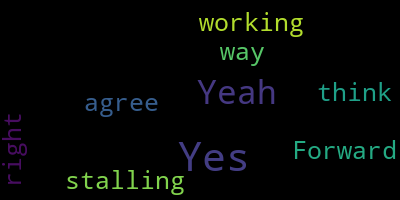

[SPEAKER_15]: committee approval, be it resolved that the chairman select the members who will actually make the presentation to the school committee. The chairman determined the presentation teams outline who will speak about which slide the committee assigned members to assist in logistics of the presentation with city hall staff. The committee will send a message to the school committee asking for the appropriate time and approve approved length for the presentation. offered by Ron Jovino. Can I get a second on that?
[TjgvMpuq30w_SPEAKER_58]: Can I ask just was that about the length of the those about the length of the presentation before we present it?
[Giovino]: It's not about the length. It's a kite before the horse, because once we have approved the presentation, hopefully today, I just wanted to figure out how we're presenting it in front of, you know, the logistics, who's talking, who's, you know, who do we have to coordinate the slides with, how the presentation, it's just basic stuff that we just, I don't wanna walk away today without having, you know, an idea of who's talking and who's doing what. I think once we approve, no words can be changed, but just who wants to do it.
[TjgvMpuq30w_SPEAKER_58]: Well, but then do we know how long we have? Because if they're like, you have 30 seconds, which- They mentioned last night, 30 minutes.
[Giovino]: Oh, OK. They were warned 30 minutes. They don't believe us, but we have plenty of time. It won't be 30 minutes.
[SPEAKER_15]: I think 30 minutes is fine, as long as they don't go crazy with questions.
[Giovino]: Yeah, that's up to them, right?
[SPEAKER_05]: Mr. Lister, this is Matt. Yes. So I thought we kind of semi-determined this. I thought you, Mr. Lister, were going to kind of lead the charge, and then the people who wrote their sections were going to present.
[McCabe]: Point of order. We need a second before we continue discussion. I'll second the motion. Thank you.
[SPEAKER_05]: All right. Is my question valid then, Mr. McCabe? I thought we talked about Mr. Lister being the lead presenter, and then people were doing their sections. Maybe that's what Ron is getting to.
[Giovino]: I don't know. Maybe. I think that's an assumption. I don't think we've actually decided. you know, my resolution is more about anybody who wants to be involved should at least be able to volunteer and Jim can make that decision.
[Rocha]: I believe that we had spoken about possibly the chair presenting the process portion and then having those who volunteered to speak and voted for the names to speak, but I'm not certain how applicable that would be now.
[Giovino]: Just through the chair, I mean, my resolution is a basic logistic one so that we have in writing who's doing what, how do we get the slides up with the city hall meeting, just those things. I don't, it's not about anything more than I just want to, I know we've talked about it, but we haven't really decided who the ones that will be talking are. So, and this is all after there was a presentation approved. So this, if we approve it just means we're going to talk about it after the presentation is voted on.
[Rotolo]: Mr. sure if I could speak on it as well just through the chair thank Ron for putting out the logistics I think it's very important to get those on paper. I agree with most of almost all of this the only change I would suggest, perhaps as a friendly amendment is that. people volunteer we've done everything on a volunteer basis now so if people are interested in presenting that they volunteer and that there's more than one volunteer that we just put it to a simple vote, since we've all sort of gotten to know each other so well and work together so so well on this committee.
[Giovino]: I would accept that.
[Rocha]: So just to clarify with that friendly amendment, that would mean that people would volunteer. And then if there's more than one person volunteering for the same section, there would be a simple vote of the whole committee as to who would be the person to present.
[Giovino]: Yeah, I do think that we have a chairman and that chairman should drive this whole process, but let's hope that we don't run into... People who are passionate about a slide should be able to say, I'm passionate about a slide and we move forward. It shouldn't be anything but that. But yes, I agree, volunteers are the way to go.
[Rotolo]: And I was just saying, you know, to put into a vote to sort of continue this collaborative process with no disrespect to the chair, his ability to make a decision.
[Giovino]: You're muted, Jim.
[SPEAKER_15]: Doesn't work that way, huh? I'm sorry. Myself, I like, I've talked to Ron about doing part of the presentation. And I think that Dr. Caldara, we've talked about her doing her rubric. So those would be two people that I would like to do most of the presentation. And then if anybody wants to volunteer to participate, we can find a place for them. Okay? We good with that?
[Giovino]: Patrick has his hand up.
[SPEAKER_15]: Patrick, go ahead.
[McCabe]: Yeah, the concern that I have is just get the cart before the horse a little bit here with the first whereas. The whereas says we've already agreed on the presentation, which we haven't, so.
[SPEAKER_15]: We haven't because we keep stalling, I guess. We're too slow with that.
[McCabe]: So we can't, I don't think that we can vote on an amendment saying we've agreed to the presentation when we haven't, so.
[SPEAKER_04]: I would like to make a motion to accept the presentation except supply to anyone. Is there a second so we can get this over with and then we can finish what we need to do.
[SPEAKER_05]: Mr. Lister, I just have to say I am not in a hurry. And also the fact that you're, you're describing how we're working together on each slide and stalling. It's just, I don't feel that way at all.
[SPEAKER_15]: So I just want to make sure I watched the school committee last night and I was, we were criticized for taking so long.
[SPEAKER_05]: Well,
[SPEAKER_15]: We're trying to obstruct this, I guess.
[SPEAKER_05]: I think we're doing good due diligence. I agree. I think voting on it right now to just pass it all, I wouldn't mind reviewing the last couple of slides that we haven't really looked at. There's enough. I've looked at it independently.
[Giovino]: I move to table my resolution and get to Patrick's resolution. That's important, too.
[McCabe]: I can second that motion to the table. OK.
[SPEAKER_15]: The second resolution. If the committee is unable to agree upon a full presentation by 530, the committee's presentation will include pages one through eight of the presentation, which we reviewed last week and a nine slide with the three names proposed and nothing else offered by Patrick McCabe. Do I get a second on that? I second.
[SPEAKER_01]: A point of information, if we're not in a rush to push this through, then what's the point of this resolution? Mr. Havestro just said that he had no intentions of rushing this through, but it seems like if we're just going to vote at 530, regardless on the slides, we're kind of being contradictory. Right.
[Brothers]: So I think it's because we all feel like the presentation is done. It's just, we haven't actually formally reviewed it together. And I know I would like to do that.
[McCabe]: Curt Brown, OSBT-Karen Hollweg, OSBT- Dave Kuntz, OSBT- John Gerstle, COB OSBT- Dave Kuntz, OSBT- Curt Brown, OSBT- Curt Brown, OSBT- Dave Kuntz, OSBT- Curt Brown, OSBT- Curt Brown, OSBT- Dave Kuntz, OSBT- Curt Brown, OSBT- Curt Brown, OSBT- Curt Brown, OSBT- Dave Kuntz, OSBT- Curt Brown, OSBT- Curt Brown, OSBT- Curt Brown, OSBT- Dave Kuntz, OSBT- Curt Brown, OSBT- Curt Brown, OSBT- Dave Kuntz, OSBT- Curt Brown, OSBT- Curt Brown, OSBT- Curt Brown, OSBT- Curt Brown, OSBT- Curt Brown, OSBT- Curt Brown, OSBT- Curt Brown, OSBT- Curt Brown, OSBT- Curt Brown, OSBT- Curt Brown, OSBT- Curt Brown, OSBT- Curt Brown,
[SPEAKER_04]: just everybody has a chance to look at it this weekend, right Mr. Chair?
[SPEAKER_15]: We should be able to get this done in an hour and 15 minutes. If not, I mean, you know, the mayor had said we could have another meeting this week if we had to, not that I want to, I would, I'd like to wrap it up tonight. I think the presentation looks great.
[Giovino]: Point of information. Yes, I would like to just offer a friendly amendment. Patrick's, uh, you know, it looks like we are we maybe Dr Cushing knows, but it looks like the next event here is 6 30. I would hate to think we lock ourselves into 5 30 and have one slide left and we have to scrap the whole thing. So, um, I'm just offering a friendly. Maybe we go to, um, 6 15 to make it, uh, more palatable, but we need to move the vote or else we're going to waste more time here.
[Cushing]: Sorry to interrupt, but this Zoom channel is wide open this evening.
[SPEAKER_18]: Okay.
[Cushing]: You know, I'll be doing double duty at seven o'clock for the National Junior Honor Society at the McGlynn, but this, we do not have the issue that we had last week. And I also wanna say, I apologize for having to cut everybody off. It was the budget hearing for our $68.2 million budget for next year. So I apologize for anyone that was cut off. Thank you. Jim, Jim, do you have a question?
[TjgvMpuq30w_SPEAKER_65]: Um, so this is Danny. So you, you said, you know, the information out over the weekend, uh, you know, I know I reviewed it and I'm sure some of the other folks reviewed it. Maybe it's just a simple of question of, you know, you asking, was there anyone that wanted to change on something? And if there was, then we proceed and go through it. But if there was no one that had a specific change, then why can't we just move it along?
[SPEAKER_15]: All right, well, first, I agree, but first we have Patrick's motion. If you want to continue on with this, we got to vote it up or down, and then we can continue on and get into the slides, hopefully. And if anybody has a slide that they want to pick out, we can work on it.
[McCabe]: To Ron's question of the friendly amendment, Ron, my concern is, you know, if we're saying 615, then we have to vote on your you know, your amendment as well. So, um, if you're, you know, if you're agreeable to six o'clock, I'll, I'll accept that as a friendly amendment instead of five 30. Yeah.
[Giovino]: I just want to move the question. Yes, that's fine.
[SPEAKER_04]: Okay. Weren't we just told that we didn't have any time restraints tonight? Right.
[Giovino]: So it's a yes or no vote on whether we, uh, ended at hard at six o'clock.
[SPEAKER_15]: Right. Okay, it's a yes or no vote whether we end at six o'clock.
[McCabe]: Not in the meeting, but at six o'clock.
[SPEAKER_15]: And the deliberation.
[McCabe]: And the deliberation on the slides. Correct.
[Giovino]: But let me just be clear that it ends the slide and it also cuts out the information. So that's what we're voting on.
[McCabe]: Right, but there's still a discussion about who presents the first eight slides and the ninth slide.
[Knight]: Yeah, I agree. Yeah.
[SPEAKER_15]: Okay. Bri, yes or no?
[Brothers]: Yes.
[SPEAKER_15]: Dan? No. Erin? No. Beth? Beth, do you hear?
[SPEAKER_13]: Yes.
[SPEAKER_15]: I'm sorry, yes. Dr. Grace?
[Caldera]: Yes.
[SPEAKER_15]: Ken Mallon? Yes. Kristen Scalise?
[SPEAKER_13]: Yes.
[SPEAKER_15]: Laura Rotolo? Yes. Lee? Yes. Lewin Tapa? Oh, okay.
[McCabe]: Oh, he's on now.
[SPEAKER_15]: Yup. Maria Rosha.
[SPEAKER_08]: Yes.
[SPEAKER_15]: Melissa Miguel.
[SPEAKER_08]: No.
[SPEAKER_15]: Patrick McCabe. Yes. Paul Donato.
[Giovino]: No.
[SPEAKER_15]: Ron Giovino.
[Giovino]: Yes.
[SPEAKER_15]: Seth Hill. Yes. Kathy Kay. Yes. Matt Haberstraw. Yes. And I'll call him Mackenzie.
[Rotolo]: Yes.
[SPEAKER_15]: It was before.
[Rotolo]: Yes.
[SPEAKER_15]: And Jim Lister. No. Yep, 15 in the affirmative and six in the negative. So we ended at six, one way or the other, okay?
[SPEAKER_04]: Now, Mr. Chairman, may I make a motion to have the presentation the way it is so we don't delay anymore. We can discuss whatever you'd like to discuss afterwards, but we can accept the presentation as it is. So this way there's no argument or no discussion about eight slides, nine slides. It's the 20 slides minus the 21, slide 21, and then just... then we can nitpick through every slide afterwards.
[SPEAKER_15]: Can I get a second on that?
[SPEAKER_05]: Well, I object to this, Mr. Rustin.
[SPEAKER_15]: Well, let's get a second. If we're going to discuss it, we need a second. If we don't get a second, we won't go any further.
[TjgvMpuq30w_SPEAKER_29]: Can I ask a point of information?
[SPEAKER_15]: Yes.
[TjgvMpuq30w_SPEAKER_29]: When I looked at the slides, there were 27 slides, and I'm hearing a number of 21. When I looked at it, did things change? How many slides are there that we're talking about right now?
[Giovino]: Point of information, those slides after slide 21 were left there as part of the discussion from the editing issue that we had, which is no longer. So those, if everybody agrees, those are invalid slides and those were just there for, so it's 21 slides right now.
[TjgvMpuq30w_SPEAKER_29]: Okay, that's what I wanted to know, because some of the information was repeated. Yeah, those additional ones about- I wanna know how many I'm voting on.
[Giovino]: Those additional slides about Jean Barry Sutherland are deleted. The end.
[SPEAKER_04]: So my motion was seconded, Mr. Chairman. Okay, so now- We can discuss the slides, but let's just approve the entire process, and then we can go through slide by slide if you'd like, but at least we know that the 20 slides have been approved.
[Brothers]: How can we approve the 20 slides without, I know that we were specifically asked not to edit, but to make comments. And I know I made a couple and I would, I'm assuming people left comments that we should read.
[SPEAKER_05]: So now's the time. Right. I just thought we would start where we left off last week. There's not that much more to do. It will take us longer.
[SPEAKER_15]: We're interested in saving time. I sent it out to all of you so you could look at each slide, make your own notes, and then while we're here right now, we'll discuss what certain slide you want to discuss. If there's a slide that no one has a problem with, we don't even need to look at it. We'll accept it.
[SPEAKER_04]: I was at the school committee meeting last night, Mr. Chairman, and I was, you know, disappointed that they said that we were trying to stall the process. Well, right now is a motion on the floor, not to stall the process any longer. We can discuss like Brie said, individual slides or individual comments. but at least we can agree on the 20 slides to go forward. So now we don't have to worry about a six o'clock deadline. We don't have to worry about anything because the 20 slides have been approved.
[SPEAKER_05]: I just think that's just watching things. I just want to begin where we left off. A lot of us have notes for different slides. I don't see any reason. Thank you for your report from the school committee. I didn't watch the school committee. I'm not delaying any process. I don't think you are either, Mr. Donato. And I think we should just review the slides where we left off. There's not that much more to go. Yes, I've reviewed it, but I think people want to discuss it.
[Hill]: Point of order. trying to just count through 20 slides, 21 slides, I'm like, you know, I printed what was sent by the chair, I have 30 something slides, I recognize that some of them were what were added at the end that weren't for Ron. But my last slide that says thank you, That's 27, I believe. I'm still trying to count. So I think that we need to go through specifically slide by slide. We're going to have 20 slides, 18 slides, 21 slides, whatever it is. There's no other way in which to do it other than just doing it step by step.
[SPEAKER_04]: I just don't want the school committee to think that we're stalling the process because I think that we amazingly- This process is our own.
[Hill]: I'm sorry to interrupt.
[SPEAKER_15]: We are, we have a motion. So you'd vote no on the motion then. So don't want to just take the whole thing.
[Hill]: It was a point of order that that motion can't stand as is because we don't actually know what the motion is. What 20 slides are we actually talking about? Which specific 20 slides is the motion? Paul, would you like to repeat your motion?
[SPEAKER_04]: Yes, there are 22 slides. We're going to say because the thank you, after you look, the thank you would be slide number 22.
[Brothers]: The thank you is slide 20. It is 22, sorry.
[SPEAKER_04]: Thank you. Slide 22 says thank you. The one prior to it is 21. I'm just asking that if we could delete slide 21 off the whole process, and keep those other slides, which are 20 slides, with the thank you, end with the thank you. Just remove slide 21, that's all I'm saying. And we could say, yes, and now you wanna individually, like Matt, and I agree with you, Matt, we can go through each individual slide. But in case we go past 6.15 or six o'clock, at least we know that these 20 slides are approved. that we've all looked at and we've had all weekend to look at them. The school committee thinks that we're stalling the process. And I don't want that. We've done such an amazing job on this presentation and it should be seen in its entirety. And I don't wanna see just eight slides be presented to the school committee. I think that these 20 slides should be approved. That's just my opinion.
[Giovino]: Point of information to the motion maker. Paul, I hear you, I listened to that stuff last night as well. I think what I would ask you to do is table it, and at any point between now and our deliberations till 5.59, I think that's a valid proposal, but it sounds like just the feel of the room says we need to go through these, even though we've all committed to six o'clock, I hope we do it with great speed. But I'm just asking to consider it, you don't need to.
[SPEAKER_05]: I'm not sure Mr. Lister who shared her screen before and was making corrections and what slide we are stopped off. I think it was nine or 10 or something like that. And since a lot of us have looked at already, I think it's just going to go a lot faster. The last time many of us didn't even see what was there. So let me just, we can get done while you want to withdraw your motion.
[SPEAKER_04]: I'll cable it until five 45, Mr. Chairman.
[SPEAKER_15]: All right. Very good. Thank you. Okay, all right, the last time we were here, who put it up on the screen for us?
[TjgvMpuq30w_SPEAKER_58]: I did, Kristen.
[SPEAKER_15]: Can you put it up again for us, Kristen, please?
[TjgvMpuq30w_SPEAKER_58]: Yes.
[SPEAKER_15]: And I believe we were at page eight.
[TjgvMpuq30w_SPEAKER_58]: We had just moved the former slide up to eight, and then we went with, we are back on nine, but we went with Melissa. good to put it in the different alphabetical order. So now slide nine starts with Missituk. So we will run back into Belinda. We can go through that quickly.
[TjgvMpuq30w_SPEAKER_29]: And this is Kathy Kay. I just have a small amendment that I think we need to make to slide number four, because it talked about the number of meetings and the dates that we had, and we've now had one more meeting. So that would need to be updated.
[TjgvMpuq30w_SPEAKER_58]: Can everyone see my screen?
[TjgvMpuq30w_SPEAKER_29]: Yep.
[TjgvMpuq30w_SPEAKER_58]: Yeah.
[Rotolo]: You can see I made that comment as well. So I think we're on the same page that we just need to add this last meeting, hopefully.
[TjgvMpuq30w_SPEAKER_58]: Okay, so just change this to eighth.
[Rotolo]: And have we met six times now. This is our sixth.
[SPEAKER_15]: I think so.
[TjgvMpuq30w_SPEAKER_29]: The only thing I wanted to say, too, is we don't have our names anywhere in this. And maybe that's by design. But I think our names should be.
[SPEAKER_15]: First slide. First one.
[TjgvMpuq30w_SPEAKER_29]: Is it? I don't remember seeing it when I looked it over.
[SPEAKER_15]: Yes.
[TjgvMpuq30w_SPEAKER_29]: All right. I apologize.
[SPEAKER_15]: Thank you.
[TjgvMpuq30w_SPEAKER_58]: OK, so. that we took care of. We switched the order.
[SPEAKER_15]: Excuse me on that one. Back up on that one. We took out additional recommendations.
[TjgvMpuq30w_SPEAKER_58]: Yes.
[SPEAKER_15]: Bottom line. Did we? Yes. It's in the minutes of the last minute. Yes, we did.
[TjgvMpuq30w_SPEAKER_58]: Sorry, my cursor is having weird issues.
[SPEAKER_05]: You're doing a great job, Kristen. Thank you.
[TjgvMpuq30w_SPEAKER_58]: I'm just running a lot of apps right now. I don't know how My computer wants to keep up, but we'll see. I think we did edit this bullet.
[SPEAKER_18]: Yes.
[TjgvMpuq30w_SPEAKER_58]: Yes. We did not change.
[Knight]: I think we're on.
[TjgvMpuq30w_SPEAKER_58]: We agreed. Okay. So now nine is the new first slide for MESA talk.
[Knight]: Yes.
[TjgvMpuq30w_SPEAKER_58]: Cause we switched the order. Let me see if I can make this.
[SPEAKER_15]: Anyone have any problems with this slide?
[Rotolo]: I have a comment, not a problem, just I added a suggestion for, I think, a first sentence which I took out of that book that's called the, by Michael M. Coates, I think it's called Our Medford, just to give a little context and the line would read, the first known people on the land, now called Medford, were members of the Pawtucket tribe. That was not, the Pawtucket tribe was not mentioned anywhere, so I thought that would give good context.
[TjgvMpuq30w_SPEAKER_58]: So you want to say the Massachusetts and Pawtucket tribes?
[Rotolo]: My understanding, please, somebody correct me if I'm wrong, is that the Massachusetts tribe encompasses many other tribes, including the Pawtucket. When I looked at the website of the Massachusetts tribe, it looks like the Pawtucket was in there. And looking at this book by Mr. Coates, it looks like the 30 or 40 Native Americans who lived here were part of the Pawtucket tribe. That is correct. Everybody please correct me.
[Brothers]: Erin has her hand up and she might know.
[SPEAKER_15]: Okay, Erin.
[Genia]: I actually had a comment on a previous slide. First, or maybe at another point, but I was curious about the process for the children's input and whether that was something we were going to add. But as to this question, I think that, yes, the Pawtucket peoples encompassed many different tribes. And also, because it's a river, it's also a place where many other tribes had territory as well, because of the river route. So I don't know if you want to put that in there too. how that might be put into the slide.
[Rotolo]: I couldn't trace the naming of the river to any one particular tribe. In all the places where it talked about it being named, it just talks about it being named by the native peoples who lived here. Because like you said, the river spans many communities and many tribes at the time, right?
[Giovino]: point of information, my research shows that Medford was purchased from the wife of the chief of the Pawtuckets, so I think it's valid to put Pawtucket in there.
[Genia]: I think you could probably put both, just to be sure.
[TjgvMpuq30w_SPEAKER_58]: I'm just typing, I have no knowledge
[SPEAKER_13]: I think Massachusetts is the Massachusetts tribe does not have an S at the end.
[Rocha]: Another point is in that last slide, it says the location of our school. Could we change that to of the Hicks Ave School? I believe that using our is a bit confusing, although it is a presentation about renaming this school, but just the pronoun our seems odd.
[TjgvMpuq30w_SPEAKER_58]: I'm sorry, which slide? The previous one to this?
[Rocha]: No, on this, on the first Missituk, on that last bullet point where it says the location of our school,
[TjgvMpuq30w_SPEAKER_58]: Oh, I guess it does seem a little strange since we all didn't go to elementary school there.
[TjgvMpuq30w_SPEAKER_29]: Maybe just put the? Yeah, take out the word our and put in the word the.
[TjgvMpuq30w_SPEAKER_58]: You can call it Kathy K's school.
[SPEAKER_13]: She's responsible.
[Rocha]: Another point in the bullet point saying colonists moved here because of the river and built great ships. Could we remove the word great? That's just a personal thing for me. It just seems like an unnecessary adjective there. Unless that's a quote.
[Knight]: by the way.
[Rocha]: I know. It just, it, it feels like the, in the context, but it would be fine to keep as well.
[TjgvMpuq30w_SPEAKER_29]: I'm okay. If that word is removed as well, because it does put value.
[SPEAKER_05]: Well, our ships were valued over the world and how fast they moved. So I have no problem with great.
[Hill]: I would actually prefer, maybe I have less of a problem with the word great than I do with essential, considering the type of trade that was happening at the time.
[Brothers]: What if we just said clipper ships?
[TjgvMpuq30w_SPEAKER_29]: Sailing ships? Is that what they built?
[SPEAKER_08]: We were a very famous method for building clipper ships. They were able to go to China to get spices and silk. And so anyway, Magoon was a big ship builder, for example. Anyone who grew up on Magoon Ave?
[SPEAKER_05]: You could say great clipper ships that were renowned around the world.
[TjgvMpuq30w_SPEAKER_29]: or renowned ships.
[SPEAKER_05]: Right, renowned ships around the world. And never get rid of essentials trade.
[TjgvMpuq30w_SPEAKER_29]: And you can say used for trade around the world and take out the word essential as well.
[SPEAKER_05]: Exactly. So built great clipper ships that were renowned around the world. Maybe you have a better example, I'm not sure.
[Genia]: And they were also used for the triangle trade too, so I think.
[SPEAKER_05]: Right, that's the.
[Genia]: Like maybe not saying that it was, I agree, maybe not placing that value on it because it doesn't have the same value for everybody.
[SPEAKER_05]: I'm fine.
[TjgvMpuq30w_SPEAKER_58]: I feel like I missed something.
[SPEAKER_05]: Well, I did use the word renowned, but I'm okay with this sentence the way it is if it sounds.
[TjgvMpuq30w_SPEAKER_58]: Renowned clipper ships? I don't know. Great keeps it on two lines, and doesn't force it down to three.
[Lafleur]: I think it's fine. It could just be clipper ships.
[TjgvMpuq30w_SPEAKER_58]: It could just be clipper ships. It could be just clipper ships. I'm fine with any version of this, by the way. I'm sure some people think it's great. Our ships were great. We know our ships were great.
[Lafleur]: Can we just all call them? Go to the school committee. Everybody knows our ships were great.
[Rocha]: Yeah I believe that we shouldn't be placing on not necessarily undue but controversial or subjective value on these.
[SPEAKER_13]: Although great ships is also a category of ship not necessarily referring to fine building but I think a great ship is a like a class of
[TjgvMpuq30w_SPEAKER_58]: I think that's true.
[SPEAKER_13]: I think great ship actually refers to the class of ship it was. But I think if we're saying clipper ship, shouldn't that be enough?
[Rocha]: Yeah. I also think it's less likely to be misinterpreted as putting value.
[SPEAKER_05]: I think this sentence is fine. I think we can, personally, I think we can move on. But this is just me and our teacher.
[SPEAKER_13]: Correction, and that is on the last bullet point. I think the school name was Mystic School and not The Mystic School. There's too many thes. So just get rid of that. Just called Mystic School. It's my recollection of what was scraped off the building.
[TjgvMpuq30w_SPEAKER_29]: And do we even need the first word that there? The school was first built in the location of the school? Originally called Mystic School after the river. Could be a comma. Yes.
[TjgvMpuq30w_SPEAKER_58]: What about the school that was first built on Hicks Ave? Because we have the school and the school.
[TjgvMpuq30w_SPEAKER_29]: That works too.
[Lafleur]: I like Hicks Ave.
[TjgvMpuq30w_SPEAKER_58]: Was it always Hicks Ave?
[TjgvMpuq30w_SPEAKER_58]: You're very good at this editing thing. Lifelong admin.
[SPEAKER_13]: Thank you.
[SPEAKER_05]: Next slide. Next slide.
[TjgvMpuq30w_SPEAKER_58]: Oops, sorry. There we go.
[TjgvMpuq30w_SPEAKER_29]: If I may, Lisa just made a comment that Clipperships is two words. Oh, thank you.
[SPEAKER_08]: No, I don't think that it is, Kathy. I think it was just an autocorrect.
[SPEAKER_14]: Yeah, I think that's it.
[SPEAKER_08]: I can double check, but I'm not too sure. I think it's one word, but I'm not sure.
[TjgvMpuq30w_SPEAKER_29]: It does have a red line underneath it.
[SPEAKER_04]: Clippership drive is one word. Clippership is one word.
[TjgvMpuq30w_SPEAKER_29]: Oh, wait a minute. Is it like, should it be capitalized?
[TjgvMpuq30w_SPEAKER_58]: I was just going to say, is it like a proper noun?
[SPEAKER_05]: No.
[TjgvMpuq30w_SPEAKER_58]: All right. Someone else Google.
[SPEAKER_05]: I think that's the anomaly of the software. Yeah.
[TjgvMpuq30w_SPEAKER_58]: Someone make sure I'm not a sailor. I won't pretend to know.
[SPEAKER_13]: I think it's lowercase. Okay. Let's move on.
[SPEAKER_01]: Point of information, I think Jim Lister was kicked off the meeting. I'm told he has no power. I'm not sure if we can proceed without the chair. I just want to let everybody know.
[Lafleur]: Tell him he can dial in by phone.
[SPEAKER_01]: Yes, he did not reach out to me. Someone else did. Jim, are you here? Oh, no.
[Lafleur]: Hopefully he remembers that from a couple of meetings we had, right?
[SPEAKER_01]: I know, cause it happened to me and that's what I had to do when he walked me through it.
[SPEAKER_04]: So hopefully, um, put in the chat, the, uh, the phone number that he can dial in, but he probably can't see the chat.
[SPEAKER_01]: Right.
[SPEAKER_04]: I can text him if you'd like.
[SPEAKER_05]: If any school committee members are listening, this is not a stall tactic. Thank you, Matt.
[SPEAKER_04]: You could have voted already.
[McCabe]: So according to Marine Insight website, clippership is two words. Oh, man. Really?
[SPEAKER_04]: Every resource that I attack says two words as well. There we go. We'll rename the street and give you credit. All right.
[TjgvMpuq30w_SPEAKER_58]: Are we all serving on the street renaming committee?
[McCabe]: I want to sign that nomination, Paul.
[Hill]: Point of information for for Melissa, Jim had contacted you the last time around, with by text message I believe. know whether or not you might still have that within your cell phone to actually just get right back to him.
[SPEAKER_01]: I tend to delete my text messages, so let me see if I can scroll back. But yes, I will try and send that to him. I just wanted to make sure we weren't breaking any rules by continuing without him. Oh, you have a quorum, so it's fine. Perfect. All right, I'll work on that.
[SPEAKER_04]: All right, Melissa, I'll leave that up to you then.
[SPEAKER_01]: No problem.
[SPEAKER_04]: I just asked Lisa to put it in the chat if she's available to have the phone number.
[Giovino]: I would just suggest that we continue with friendly amendments. And if a vote has to happen, Jim should be here. OK.
[SPEAKER_04]: Yes.
[Giovino]: I second that. We just spent 28 minutes on the one slide. So we've all committed to 6 o'clock ending this. So just keep that in mind, too.
[TjgvMpuq30w_SPEAKER_58]: But if we're all ever in tributaries come up, we are going to kill it.
[Giovino]: I'd like the school committee to see this.
[Caldera]: I think we should, as much as wordsmithing can be really great, I think this is where we're getting bogged down. So let's look for big and rather large things that need to be corrected and kind of stick with that. If we're dealing with particular words, unless they're offensive, let's try and keep moving forward. 20 minutes on a slide is a really long time.
[Giovino]: I also would suggest too that our procedure has been the person who writes these has the opportunity to approve friendly amendments. So I would consider doing that again. And if we run into a hit a wall, then we have to vote, but I don't know who the author is in this case.
[Brothers]: I'll take this slide just so we can keep moving.
[TjgvMpuq30w_SPEAKER_29]: I just wanted to ask that I think the third bullet was already stated on the slide before.
[TjgvMpuq30w_SPEAKER_58]: Oh, that's true. Should we, since this slide is pretty crowded, should we maybe delete, remove, put this full sentence since we just agreed on it onto the next slide and remove it from here?
[TjgvMpuq30w_SPEAKER_65]: I think that's a great idea.
[SPEAKER_05]: Great idea. Absolutely.
[Brothers]: While you're pasting that, I will go over my comment. Before Jim had asked us not to edit the slides, I'm just saying I made this edit before that. That last line originally said, acknowledges those marginalized by the legacy of Columbus, which we discussed last week. I did remove Columbus from that and I changed the wording to say, colonization and the theft of Native American lands. Just after sitting with the feedback from Ron, Paul, and Danny, I kind of came to the same realization that that's not doing any good at this point. So I'm good to use the more neutral language there for the sense of healing the rift, moving forward. all of that. So as long as people are okay with that change.
[SPEAKER_05]: Thank you, Brie. I like that change. I think it's great, Brie. This is Danny.
[TjgvMpuq30w_SPEAKER_65]: I think it's great. Thank you.
[TjgvMpuq30w_SPEAKER_58]: Cool. So removing the last bullet point or... No, no, no.
[Brothers]: It's already been changed.
[TjgvMpuq30w_SPEAKER_58]: Oh, right. We changed it from... Okay, great.
[SPEAKER_04]: I believe Jim is back on.
[TjgvMpuq30w_SPEAKER_58]: Okay, good. Yay. I think this looks good. I like the acknowledge all of the different ways the river is used.
[SPEAKER_05]: I like it. Next slide, folks.
[Brothers]: Next slide. Can we, sorry, can we resolve the comments as we go? Sure. So we, yeah, so we know. Cool.
[TjgvMpuq30w_SPEAKER_58]: Now we have other slides, maybe reducing the quotes or editing them just because they're very long. And it's a lot for the, you know, to read.
[SPEAKER_05]: I think the school committee can handle reading this.
[Cushing]: I don't think the point is to read the quotes. I think the point is to just give a visual.
[Giovino]: I agree. I think What I did in my writing is they're just gonna be up there and the speaker notes, which you all got to see is a summary of what's there. I don't think we need to read those either.
[Brothers]: Okay. I also like the idea of, these are quotes from people in the community. I do too. Passionately. I think it's good to include that.
[TjgvMpuq30w_SPEAKER_58]: I'm gonna make this a capital.
[SPEAKER_15]: I'm back. Hello. What page are we on? I lost my power. The power blinked off here and I lost everything.
[TjgvMpuq30w_SPEAKER_58]: Oh no.
[SPEAKER_05]: This looks good. Can we move to the next one?
[SPEAKER_15]: Yes.
[TjgvMpuq30w_SPEAKER_58]: Everyone likes this.
[SPEAKER_05]: I thought this was, who wrote this? I thought this was a nice slide.
[Caldera]: I believe that was me. I put a lot of, the non-Jean Barry Sutherland, I at least did a lot of the initial starting work to get it going.
[TjgvMpuq30w_SPEAKER_58]: Great. Should this be tied mills for the corn, tobacco, grain, wood, and textile industries?
[SPEAKER_05]: I think we're talking about language like that, but I think that's what also Grace warned us against spending too much time on that.
[TjgvMpuq30w_SPEAKER_58]: So, well, again, if it's school committee, we should probably have, they migrate us.
[TjgvMpuq30w_SPEAKER_29]: And is the, is that last already mentioned on another slide about the poem and the, I don't think so.
[TjgvMpuq30w_SPEAKER_58]: Okay.
[Hill]: We might take out the word from that next line and it's grammatical.
[Giovino]: I just make a suggestion that everybody can go to their, you know, the grammatical stuff. We can just put comments in there and then we can clean it up as Grace had said.
[SPEAKER_05]: I'm fine with 12.
[TjgvMpuq30w_SPEAKER_58]: It's good. Is it over the river and through the wood or woods?
[Caldera]: I think it varies on the version and in and out.
[TjgvMpuq30w_SPEAKER_58]: Okay.
[Caldera]: Whatever you decide.
[TjgvMpuq30w_SPEAKER_58]: Okay, moving on. I like it.
[SPEAKER_04]: Agreed. Anybody else?
[SPEAKER_15]: Okay, can we go to the next slide?
[TjgvMpuq30w_SPEAKER_58]: We should probably And again, we can do this after. I would just say we should, the font name, but we can change that after.
[TjgvMpuq30w_SPEAKER_29]: Did you say the same font?
[TjgvMpuq30w_SPEAKER_58]: Yes.
[TjgvMpuq30w_SPEAKER_29]: Yeah, I noticed that on slide 17 too.
[TjgvMpuq30w_SPEAKER_58]: Yeah, but we can do that after, but we can make the font consistent.
[SPEAKER_05]: Yeah, there were some font and spacing issues through here, so.
[SPEAKER_08]: I think it's true, but it's not plural.
[TjgvMpuq30w_SPEAKER_58]: It's all interesting.
[SPEAKER_08]: Okay. According to the title of the Thanksgiving poem by Lydia Maria Child, if that's what you're referring to. And it's not grandmother's house, it's grandfather's house, the original, but I don't know where I can't really, it's on my phone. So I can't really see. But the name of the poems over the river and through the wood, singular.
[TjgvMpuq30w_SPEAKER_58]: Thanks. And then we switched to grandma.
[SPEAKER_15]: All right, any comments?
[TjgvMpuq30w_SPEAKER_58]: I think we reviewed this one last time, didn't we? Because it used to be before.
[TjgvMpuq30w_SPEAKER_29]: And we know all the stats are accurate, right? Because I don't know when she taught where and that sort of stuff.
[SPEAKER_15]: OK, we ready to go to the next one? Please. Yes. Thank you.
[SPEAKER_05]: You know, if we could just resolve that space issue in the last bullet between the two last bullets. I mean, is there a reason why there's a, there you go, thank you.
[Rocha]: Do we think that that last bullet point, I kind of feel as if listing things like a loving wife, a caring daughter, friendly neighbor, beloved teacher, It feels sort of unnecessary in a presentation regarding her merits as a name for the school specifically in that it feels as though it's more like a list of positive attributes of Jean as opposed to a list of her contributions in a way. particularly be a loving wife, a caring daughter, friendly neighbor.
[Giovino]: I have information. If you read the speaker notes, you'll see full explanations. I have spent, I heard your comments, Maria, and I agree with what you said. The substance now, if you read the speaker's notes, talks about a loving wife, an unbelievably friendly neighbor. I don't think those words are used enough in society, and I'm not changing them unless there's a vote. So I think those are good, and I think my speaker notes definitely justify everything was said there, from the children going to the neighborhood, from her husband's notes, both at the city council meeting and in our public information. So there's plenty of evidence there, and I would encourage everybody to read the speaker's notes. Thank you.
[Rocha]: I'm not saying that she was not a loving wife, a caring daughter, or a friendly neighbor. I just think that it's not necessary to list those when I feel as though the rest of the bullet points are the evidence that point towards that. It just feels it doesn't feel necessary to be listing that here.
[Giovino]: I understand your point. I just, we will disagree on this one and agree to disagree on that. If you want to put it up, I'm not, I wouldn't accept that as a friendly amendment, but if you want to put it to a vote, go right ahead.
[TjgvMpuq30w_SPEAKER_65]: I think it shows her, um, you know, her character, part of her character. So I think, um, I think it's a good thing.
[Rocha]: I mean, I think the rest of the bullet points do.
[SPEAKER_05]: Did we lose Kristen? We might've, we can keep talking.
[TjgvMpuq30w_SPEAKER_58]: You did for a minute. I think I'm back.
[SPEAKER_05]: Like a horror movie here.
[SPEAKER_08]: Yeah. So I think that translates with everything that Ron said, because a number of people who worked with her, such as myself, I know, I'm sorry. But I think that's the first thing you would say about her, that she's a warm person. So I don't know if that would be better, all encompassing. I don't know. Just very easy to talk to, very approachable. A The helper, you know, look for the helpers you'd look for gene.
[Brothers]: If I may, if I may, this is. Oh, sorry. Just full disclosure guys I am having contractions. Oh, I am trying to get through this meeting. Oh my god. Kind of speaking chair to Maria would these would those words that I agree. Oh, I heard through from a lot of different people who wrote in about gene Barry. If we were to add words about maybe Belinda Sutton, about like strength and perseverance and toss in a few more adjectives that speak to her character, would it feel better about leaving adjectives that mean a lot to people about Jean Barry Sutherland?
[SPEAKER_01]: Point of information, how would we get those characteristics from,
[Brothers]: Belinda Sutton when we don't have any personal... Well, I think the argument that she wrote her own terms of her own freedom, freed herself, fought for her rights after the things that we do know about her implies a certain level of strength and perseverance.
[SPEAKER_01]: She did it all through the system, which was... I don't think we wanna make any assumptions about her. I mean, it's kind of alarming to me that we don't even have any documentation that email that Beth sent us. So I'm already hesitant about what we're including. Like we don't even know if this person actually really existed.
[Giovino]: Point of information, Belinda Sutton is coming up. We'll have a chance to talk about this at that slide. Can we move on to the next slide, Mr. Chairman?
[SPEAKER_08]: Can I just ask who's having contractions? Because I don't know who's talking.
[Giovino]: That's Brie.
[SPEAKER_08]: That's Brie.
[Giovino]: Point of information, Bree, you understand that the child is much more important than this presentation. Yes, I agree.
[SPEAKER_05]: I'm sorry, Mr. Lister, can I speak? So I understand Maria's feelings about this kind of emotionally overly wrought thing of a person I've never met either, but I'm more questioning, maybe Ron can answer this, can you give me an example of her being an innovator for special education?
[Giovino]: And point of information, first to say emotionally awry, I take offense to. So let's try to keep it as not comments. Yes, coming in the next slide, you will understand how exceptional she was with dealing with special education. All that comes in here. She was an advocate. The next slides will explain that, Matt. I appreciate what you're saying. All this stuff is not, I clarify by saying when I got here, I did not know who Jean Barry Sutherland was. I know she was not the favorite choice here, but what I've done, but what I've done is I've reached out. I've done my research. I've gone back to the organization. She were part of I reached out to family friends through Facebook. I'm very confident in the statements I made and You know, I'm not an emotionally overwrought person. So these are statistics that will be backed up and you'll understand the special education above all when I prove, when I show you the information that's coming out.
[SPEAKER_05]: Can I address Ron's comments, please? I apologize for describing these words as emotionally wrought, but they are emotionally more, you know, Cuddled in that. Passionate advocate. Most special education teacher I know are passionate about it all the time. So I don't know. And yeah, there should be some real innovation that can be really documented as far as going forward in the Medford public schools, because that's a highly controversial subject, special education.
[Giovino]: Matt, just don't put, I don't wanna be a spoiler alert here, but the information that got me to that was from the assistant director of special education for the Medford Public Schools at the time that Jean Barry Sutherland was principal. So you'll read more about this, but I'm quite confident when I say she was very passionate.
[Knight]: All right.
[Hill]: I'm sorry. just building on that, Ron, I understand there's passion, but then there's also innovation. So innovation implies something specifically new. And I didn't read through your deck, specifically on, I'm sorry, who else is speaking?
[SPEAKER_08]: I'm sorry, this is Lisa. Nobody's going through the chair, so people are just talking and I don't know who's talking. So it's- This is Seth. I understand, but it's not just, it wasn't just you, Seth. It's just, I think that Ron, Matt, somebody before Matt, because everyone's jumping in. So please go to the chair. Thank you.
[SPEAKER_15]: All right, go ahead, Seth.
[Hill]: Okay. Thank you, Mr. Chair. My question, through the chair for Ron, builds upon what Matt was saying, specifically in the language that is being used. And I can understand passion and advocacy, and those would be things that I would recognize and would expect. Innovation is something specifically different. And in reading through, I see examples of passion and advocacy, but I don't necessarily see specific representation of innovation.
[Giovino]: And I would love to- It has no impact on the presentation. Let's remove and innovator just to move on.
[Rocha]: Um, if I may speak, I this is Maria, by the way, I don't, I take issue with the fact that we're listing these different aspects of genes legacy. And Ron, you have repeatedly stated that there's evidence for that. Two points. First is that The evidence should serve and stand on its own. I don't think that we need to be listing these things because they are things that become clear through the evidence that you provide, which are Jeanne's actions. You have great things here. That's undeniable, anti-smoking campaigns, dog park advocate, et cetera, et cetera. However, I think that that is more demonstrative of Jean being a friendly neighbor and beloved teacher than having to list that out, in my opinion. Second, I would also say that in order to make these sort of not necessarily generalizations, but very concrete, concrete assumptions. That's not necessarily the word I'm trying to use, but about Jean's character based strictly on anecdotal evidence seems problematic to me.
[Giovino]: I appreciate your opinion, but I couldn't disagree with you more. This is what separates Jean Barry Sutherland as a citizen of Medford and a very strong role model. and also her impact on the history of the city has yet to be decided. And I understand what you're saying. It's been clear in all your comments. I understand your point. I am not gonna neutralize Jean Barry Sutherland to make her equal to the other two candidates. This is part of who she is.
[TjgvMpuq30w_SPEAKER_29]: Can I make a suggestion to the chair that might? make more people feel better about this statement is because she was a wife, she was a daughter, she was a neighbor, she was a teacher. Those are characteristics that do make her valuable for a person to consider. So would it sound better or would people feel better or more comfortable, I should say, if we said Jean was a well-loved wife, daughter, neighbor, teacher, and community leader, full stop. She was a passionate advocate and I thought if we just said we were gonna take out innovator for the needs of all the Medford children and their families. So you're still stating what her characteristics are. We're saying she was well-loved based on all the reading we did about her, because it comes clear when you read the comments that community members have written about Jean repeatedly, many of them. That would just be my suggestion.
[Knight]: I like that.
[Lafleur]: All right, Lee, did you want to speak? Yeah, I like Kathy's suggestion as well. And I just really wanted to remind this group that we're presenting all three of these names. We're championing all three of these names for the school committee to make a decision about. So we want to sell all of these, I believe, as being the output of our work. And so just looking at the time, we do need to move through this.
[Giovino]: We haven't agreed on the changes that I'm seeing being made here.
[Lafleur]: Sorry, I got excited. I need a vote. Let's just have a vote. We're not going to change, sorry, Ron, without a vote. So if we need to vote, we should just vote and move on. Or otherwise, just, I think, move on. I don't want to curtail discussion, but I want to share.
[Giovino]: I'm ready for a vote. I'm ready for the vote. I'm not removing it without a vote.
[SPEAKER_15]: All right, I got a few more hands up. Patrick.
[McCabe]: Yeah, I passed. I was going to say the same thing as Lee. I mean, our job here is not to advocate for one person over another. We need to make sure all three candidates that we put forward have an appropriate response.
[SPEAKER_15]: Correct. OK, thank you. Laura, did you have your hand up? All right, that was all. Okay, sorry. Am I missing anybody else? Okay, so Ron, you want us to vote on it the way it is?
[Giovino]: No, just take it off. I just wanted to be known in public that I am not happy with this change, but in the interest of time and not having anything about Jean Barry Sutherland, I agree to take all those emotional adjectives off. I want to take that off. I would put it to a vote.
[SPEAKER_04]: Yeah, put it to a vote, Ron. Put it to a vote. I would leave it the way it is, Ron. You work really hard on this. I'm sorry, my name is Paul.
[SPEAKER_01]: Hi, this is Ron. Jim? Yes. Hi, this is Melissa through the chair. So as a parent who entrusts her two children to the Medford public school system every day, I think that these attributes are key. to explaining or that you'd wanna see in a teacher. I'd have to say this, in all the years that my children have gone through the Medford school systems, they have not all been loving and caring and advocates for the children. So I think if we're looking to name a school after an educator and such a champion for the children and families of Medford, it's extremely important that this person does hold those qualities and we make sure that we highlight those qualities. So there's a former principal of the Columbus School who could tell you that I have had many meetings with her about a teacher who was none of these qualities and who had no business being in the Medford school system. So I think if you're speaking about an educator, it's absolutely important that to me, when my children are going to this place five, six, seven hours a day, and I'm entrusting them for the care of my child every day, that they should have these qualities. So I think it's key that these are on here. And I want to back Ron and his work on this slide.
[SPEAKER_14]: Very good. Thank you. Let's just move the vote, please.
[SPEAKER_01]: All right. What are we voting on?
[Rocha]: Is this to remove the bullet point or to move the adjectives?
[Giovino]: Are we voting to accept Kathy's suggestion or are we moving to remove the bullet point or to remove the adjectives? Removing the adjectives.
[McCabe]: Point of order. The motion is by Kathy. Can we have Kathy say what her motion is, the amendment to this slide?
[TjgvMpuq30w_SPEAKER_29]: Kathy. Yes, sure I can. My suggestion was that we write, Jean was a well-loved wife, daughter, neighbor, teacher, and community leader. and then you put a period, she was a passionate advocate for special education and the needs of all Medford children and their families. So we're still saying she was well-loved, but rather than those other adjectives, we're still leaving her characteristics of being a wife, a daughter, a neighbor, a teacher.
[SPEAKER_04]: This is Paul, I second Kathy's comments.
[SPEAKER_15]: Do I need to go a roll call? Is there anyone that objects to this? I believe Ron does.
[TjgvMpuq30w_SPEAKER_58]: I think they both say nice things about her.
[Giovino]: No, listen, if it says well-loved, that encompasses well-loved daughter, well-loved neighbor, that's fine with me.
[SPEAKER_15]: Okay, can we make those changes and we can okay this slide?
[Rotolo]: Is there still a motion to accept or remove that last bullet? I'm just confused.
[SPEAKER_15]: No, there wasn't a motion for that. There was a motion to accept the whole slide as it was.
[SPEAKER_04]: Thank you, Ron, for allowing us to change the slide.
[SPEAKER_05]: Yes, thank you, Ron, for your flexibility. I really appreciate it.
[Giovino]: There's so much more you guys are going to love too. Let's just move on to the next slide.
[TjgvMpuq30w_SPEAKER_58]: Sorry, Kathy, can you say the end again? Well-loved wife, daughter, neighbor.
[TjgvMpuq30w_SPEAKER_29]: Well-loved wife, daughter, neighbor, teacher. end community leader, period. And then I think if you start a new sentence, she was a passionate advocate, because that even makes it stronger, it's got its own sentence, I think.
[TjgvMpuq30w_SPEAKER_58]: It's true, it highlights that more.
[TjgvMpuq30w_SPEAKER_29]: Education and the needs of all men for children and their families. That might even be another bullet.
[TjgvMpuq30w_SPEAKER_58]: Okay, yeah, I can see that. Anybody else? Bullet?
[SPEAKER_05]: This slide looks good. Ron, are you happy?
[SPEAKER_04]: I would move on.
[SPEAKER_15]: All right. Thank you.
[SPEAKER_04]: Thanks again, Ron.
[SPEAKER_15]: Thank you, Ron.
[Giovino]: Just a description of the slide before you all start.
[Rocha]: Actually, I apologize. I had another point. Someone asked if we could make a motion to remove and to make that motion to remove those last two bullet points.
[Giovino]: And what would be the point of that? Just point of clarification.
[McCabe]: Point of order. He needs a second before we discuss. Yeah.
[SPEAKER_15]: Anybody want to second that motion? I'll second it.
[Rocha]: The point is that you already have the evidence that she was well loved and that she was a passionate advocate, particularly in the positive role model slide. I think that that does come through clearly through the quotes that you have. I feel like it would be redundant to have that information here if you're already going to make the case for it and
[SPEAKER_15]: future slides um anything else anybody else on that okay we'll vote on it you had a first and a second so the motion is to remove the bullet point right yes
[Hill]: We go back and look at the slide please.
[SPEAKER_04]: yeah. I thought we moved on.
[Hill]: emotion was made.
[Rocha]: The last two. Jean was a well-loved wife, daughter, neighbor, teacher, and community leader, as well as she was a passionate advocate for special education and the needs of all Medford children and their families.
[TjgvMpuq30w_SPEAKER_65]: Point of information to the chair, if we just spent all that time correcting those, how are we even discussing this right now? This is the most ridiculous thing I've ever seen in my life.
[Rocha]: A motion was made and seconded, meaning that we will vote for it.
[SPEAKER_01]: Chair Jim.
[SPEAKER_15]: Yes.
[SPEAKER_01]: So, the next slide that's being referred to that is going to be quotes on the community we had said during reviewing the mistletoe ones that we don't believe anybody's going to read that. So I think it's unfair to infer that they're going to suddenly read them for gene and pull these out. I think the point of this slide, the way it was for Mr. Tuck, is to highlight the information that's on the next slide that people already said that they're not going to read. So I was speaking. So I'll say it again. So this slide, just as when we talked about for the Mr. Tuck slide, was to kind of summarize what was on the community feedback slide. And it's unfair to summarize it on the Missituk slide, but remove it from Jean, assuming that people are gonna read through it for Jean and pull out these points.
[McCabe]: That's not the slide that we're discussing. She's discussing the bottom two bullet points on the slide before that.
[SPEAKER_01]: Okay, but then we're saying that the next slide after that, it gives this, we'll be able to infer these two bullet points from the next slide.
[Rocha]: Yes, and if you look through the speaker notes of the next slide, it does make, it does summarize what these quotes say, making very clear exactly what those two bullet points say, meaning that to have them would be redundant based on the speaker notes of the next slide.
[SPEAKER_01]: So point of question, people reading on the slide versus what they're listening. I think when people are going to be able to read it for themselves, I think it's important that this is here. And I think if we're moving stuff from here, we need to go back to miss the talk and remove information that could be inferred and not in the speaker notes.
[Rocha]: Point of order. Can we move the question? If you If through the chair, if Melissa takes issue with my motion, then she can vote now.
[SPEAKER_14]: Okay.
[SPEAKER_01]: It was a point of clarification, actually. So I'm asking for clarification.
[TjgvMpuq30w_SPEAKER_29]: Are we going to take a vote if these two bullets should stay or leave? Is that where?
[SPEAKER_15]: Yes. Ready? Ready.
[Brothers]: No.
[SPEAKER_04]: Mr. Chair, can you clarify a yes and no vote, please? Yes is remove, a no is stay. No is a stay. Thank you, Mr. Chair.
[SPEAKER_15]: Dan? No. Erin? No. Beth? No. Grace? No. Ken? No. Kristen. No. Laura. Abstain. Mr. Chair.
[SPEAKER_14]: Okay.
[SPEAKER_15]: Lee.
[SPEAKER_14]: No.
[SPEAKER_15]: Lou. No. Maria Rosha.
[Rocha]: Yes.
[SPEAKER_15]: Melissa Miguel.
[Rocha]: No.
[SPEAKER_15]: Patrick. Nope. Paul Donato.
[Hill]: No.
[SPEAKER_15]: Ron Jovino.
[Hill]: No.
[SPEAKER_15]: Seth.
[Hill]: of state.
[SPEAKER_15]: Kathy Kaye? No. Matt Habistro? No. Janelle Garland McKenzie?
[SPEAKER_13]: No.
[SPEAKER_15]: Josie DeFore?
[SPEAKER_13]: Yes.
[SPEAKER_15]: Jim Lister, no. Okay, let's move to the next slide. Thank you.
[SPEAKER_04]: How much time was wasted on that, Mr. Chair?
[SPEAKER_15]: I don't know.
[SPEAKER_05]: Actually, your question was a waste of time.
[Giovino]: Just a description of this, Jim, if I may. This is Ron. Again, the intent is just to show this slide, capture all the stuff, and then the speaker notes are really what I'd like you to all focus on or have focused on yet.
[SPEAKER_05]: Can we scroll it down so we can see the speaker notes? I don't know. Maybe I can't.
[TjgvMpuq30w_SPEAKER_58]: I can lift it a little.
[SPEAKER_04]: Thank you, Kristen.
[TjgvMpuq30w_SPEAKER_58]: Can you see that?
[SPEAKER_04]: Yes, thank you.
[SPEAKER_05]: Thank you, Christian. Mr. Lister, this is Matt Haberstow. I think this is great.
[SPEAKER_15]: It's all quotes. I think this is great, too.
[TjgvMpuq30w_SPEAKER_58]: We had so many nice things to choose from.
[SPEAKER_15]: Great.
[Rocha]: I'd like to make the point that in the Missituk slide, including the quotes, the quotes are not summarized as they are here. And so I believe that either we should include that summary in the MISUTUG slide or remove the summary in this slide.
[Caldera]: We can go ahead and sorry, it's grace caldera here. Um, I wrote like some of the initial script stuff, so we can go ahead and include that summary in both mistook as well as Belinda. Um, so that it equals what Ron has, um, written here. That's totally fine. Okay.
[SPEAKER_15]: Thank you. All right. We all sit with this slide. Can we go to the next?
[SPEAKER_14]: Yes.
[Rocha]: I had a comment on that piece stating educator advocate for special education represented Medford internationally. In terms of formatting, Ron, would you be okay if we made that into a bullet point instead of having it as a subtitle?
[Giovino]: That was the one piece I did not put there. That was Grace's, so I just left it there, that's fine.
[SPEAKER_05]: Ron, can you expand on, I don't know, I'm just having a hard time with this innovator thing.
[Giovino]: Yeah, we can eliminate it. We eliminated it two slides ago, so I'm okay with it. It doesn't make or break Gene Barry Sutherland, so you can take innovator off.
[SPEAKER_05]: Okay, and Ron, I'm sorry, Mr. Lister's Matt Haberstroh. Thank you, Lisa. But I don't, so was Jean Barry Sutherland a special education educator or was she just an advocate for special education, which is state law. You have to have special education in elementary schools.
[Giovino]: That's a good question, Matt. And Jean Barry Sutherland was principal and part of her role was to handle special ed. And Dr. Kay can relate to this, I'm sure. But what was unique about her is the ability to really delve into their IEPs, make sure that they were there at all the meetings, individual meetings, as she also met with the consultants from the school. And she also invited special education students from around Medford to her school to share the programs. And I will say this, if you all remember the brown envelope that arrived at my mailbox,
[TjgvMpuq30w_SPEAKER_58]: The mystery envelope.
[Giovino]: Yeah, so this is the stuff that I got in the envelope. And one is this letter from- Out of order, Mr. Chair, that is out of order.
[Rotolo]: None of us have seen what is inside that envelope. I'm sorry, through the chair to Ron, none of us have seen that.
[Giovino]: Laura, I understand what you're saying. Research is all-encompassing. When I did research, I'm just telling you, here's what's here. The proof is here, signed off by the assistant director of special education. So I didn't hide this stuff. This is factual stuff.
[SPEAKER_04]: Okay, I'm curious, Mr. Chair. Barry Sutherland did start off her career as a special education teacher. And I believe Kathy Kay can attest to that if I'm not correct.
[TjgvMpuq30w_SPEAKER_29]: Actually, I cannot. Jean was two principals before me. She was a lovely woman, and I did get to meet her, but I don't know what her past was. Sorry.
[SPEAKER_05]: Mr. Lister, just a point of information, or maybe I can ask Ron too, but special education is state law. you don't necessarily advocate it, you're told to do it.
[TjgvMpuq30w_SPEAKER_29]: And I'm sorry, Matt, I do have to disagree. You do need to advocate many, many times for special education children.
[SPEAKER_05]: Okay.
[TjgvMpuq30w_SPEAKER_29]: As a principal, definitely.
[SPEAKER_08]: I could just jump in when Jean first started. Now, maybe Kathy, you do know this, but I'm not sure special education was a separate a major study at that time when she began, because I think she started teaching in the late 60s, early 70s. So I'm not sure if that was a special, I don't know if major is the right word. Kathy, you could help me there. I don't know.
[TjgvMpuq30w_SPEAKER_29]: I don't want to quote years when IDA and all that sort of stuff came in. Actually, Janelle, you might know better than me. But I would have to say, in all the roles she played at some point, special education would have played an important part, especially as a principal.
[SPEAKER_15]: Okay, I see a couple of raised hands.
[Lafleur]: Lee, did you wanna speak? Yeah, I was just gonna comment on this on the last bullet point, which I like, but I wanted to just note the language about a true role model. The previous slide was the role model slide. And we did talk about her role as a role model on that slide. So I'm not sure that it's necessary on this one.
[TjgvMpuq30w_SPEAKER_58]: about provide for the children an excellent example? Provide an example? This is Ron.
[Giovino]: I hear you, Lee. I mean, when I wrote this, this was kind of like the summary page for the presentation. So, and we've already changed it from a historical hero to a role model, but whatever word you want to use, these words are not significant to the essence of what it is, but that's where it came from. It was like a summary page, but I appreciate what you're saying.
[TjgvMpuq30w_SPEAKER_58]: I think it has more impact if we, this is just my opinion, it's Kristen's policy, if we are using different language a little bit on each slide, just so it doesn't sound repetitive. So if we said role model, the last one, maybe say example, or obviously I need a thesaurus because that's who I think of.
[TjgvMpuq30w_SPEAKER_29]: Point of information, if I may, Mr. Lister, it's Kathy Kay. So what came through from the children's comments was that she definitely had a connection to the school that we're in right now. She had a direct connection more than the other two names. And I don't know if that's, I can't recall if I saw that on any of the other slides, but I think it is something that's important just to make sure we include.
[Giovino]: Just a point of information, I think it's the original slide that Grace wrote talking about the fact that she was the first principal and really shaped the culture of the school. I think that was Grace's words.
[TjgvMpuq30w_SPEAKER_29]: I think, yeah, just as long as it's there, I think it's important because the kids noted that, which I thought was pretty impressive.
[TjgvMpuq30w_SPEAKER_58]: Kathy, can I ask, did they have fun in the vote?
[TjgvMpuq30w_SPEAKER_29]: You know, I don't know because we're doing a lot of remote stuff and they did it in their classroom. So I got many of them back and I can tell you what the results are later if you'd like to hear. Go ahead. I'd love to.
[yrx76KKBXT8_SPEAKER_13]: I did it in my classroom. I'm a special ed teacher. They did have fun reading the information.
[TjgvMpuq30w_SPEAKER_58]: Oh, that's nice. I like that.
[SPEAKER_15]: All right. Sorry.
[SPEAKER_05]: I'm sorry, Mr. Lister. So is the line an educator, innovator, repetitive, or just
[TjgvMpuq30w_SPEAKER_58]: I feel like we could take that out. Cause now educator is the first bullet point. And then we have advocate for special education, which I do like keeping. Oh, we have that in that one too.
[Giovino]: Oh, I'm okay with that.
[SPEAKER_15]: A couple of raised hands here before we go Maria Rosha.
[Rocha]: Yeah. I have several comments. I would say that, The majority of these bullet points are information that was already stated, particularly, which was already commented on, educator and innovator, advocate for special education, which is in slide 14. I would also say that that first slide, with the exception of represented Medford internationally, can we remove that because it is repetitive?
[Giovino]: Point of information again, I use this slide as a summary under the Medford proud history. You know, the other ones were under role model. You know, so I think it's, you know, it's repetitive maybe, but it's the essence of, you know, this is an example of how she impacted Medford's history, so. Also,
[Rocha]: Well, to your point, can we still remove educator advocate for special education, and had an amazing impact on Medford community and future generations because that's stated on later slides and our later bullet points and this is a bullet point now.
[Giovino]: I hear what you're saying that bullet point is the key summary statement. So as far as her history and how she impacted the proud history, I don't believe the word redundant is correctly used.
[Rocha]: But it literally says educator then and educator and innovator, two bullet points later. Advocate for special education.
[Giovino]: Point of information, we're removing that. Those things are being removed because of the first slide. You were talking about a previous slide, I believe.
[Rocha]: No, I was talking about this slide.
[Giovino]: Yeah, no, I thought we already proved getting rid of educator and innovator on slide three.
[SPEAKER_05]: Thank you, Kristin. Let's get rid of them if we're going to get rid of them.
[Rocha]: I'd also say helped make a major difference in Medford. I think it would be more appropriate to say in Medford public schools, since the majority of the things that were mentioned was specific to the schools.
[Giovino]: point of information. We have substance abuse. We have the summer food program. We have how she closed down a convenience store. Those are citywide issues. Not be okay.
[SPEAKER_04]: Japan, which is worldwide.
[TjgvMpuq30w_SPEAKER_65]: Point of information. She was one of the founders of the jingle bell run to wasn't she?
[SPEAKER_15]: Yes. Take it easy. Yeah, I think we can leave that in. Anything else? All right. Uh, Seth, did you have your hand up?
[Hill]: I did, Mr. Sherry.
[SPEAKER_15]: Thank you.
[Hill]: what Ron was saying and sort of one of the lenses that we can look at in order to advocate for Jean Barry Sutherland is not just a woman that did a job well, but what about this woman was something that wasn't just her doing her job, but actually doing more than what her job was, which one would hope as an employee of Medford public school system that all of our educators and administrators are doing their best and being held accountable by the community. The reason that she's you know, one of the three names that we're putting forward and on this slide are not just because of her job, but specifically because of who she was.
[SPEAKER_15]: Okay, thank you.
[Rocha]: Oh, one point of clarification. Are we removing and had an amazing impact on the Medford community and future generations from that first slide? since that's encompassed by the last one?
[SPEAKER_15]: I don't believe so.
[TjgvMpuq30w_SPEAKER_58]: I think it's fine.
[SPEAKER_15]: All right. We're good with this. Go to the next one. The impact should be lowercase, just FYI.
[TjgvMpuq30w_SPEAKER_58]: Yeah, it's because we moved it down from being a title.
[Rocha]: Can we make it a separate bullet point? It just feels odd to have it there.
[SPEAKER_15]: I remind you, we're trying to finish this tonight. 533. Yeah, you know, so.
[Brothers]: This is Brady. I just, I had one comment if I, if I may.
[SPEAKER_15]: Please go ahead. How you feeling?
[Brothers]: I'm all right. Um, the last bullet point still feels like when Ron was summarizing everything, is there a way to, um, make it more. the Medford history. And I also, I don't want to get into the weeds on this, but the use of true role model in that last bullet, again, I want to go back to what Lee was saying, and that we're trying to, we're supporting all three of these names.
[Giovino]: Out of information, Brie, I don't know if you were attending to your child, but we're leaving that up to Kristen just to change that name. We agree that true role model needs to be changed.
[TjgvMpuq30w_SPEAKER_58]: Oh, OK. I would say example or a- I trust you. Someone good for children.
[SPEAKER_05]: Next slide, maybe.
[SPEAKER_15]: OK. Are we ready?
[TjgvMpuq30w_SPEAKER_58]: An example of someone who not only helped make a difference.
[Brothers]: I like that, yeah.
[TjgvMpuq30w_SPEAKER_58]: Yeah, very good. We can still comment. Bri, do you have anything you want to say just in case the lead? Oh, I'm still still here. I'm good. Okay. Okay, so I think we did a lot of this Belinda Sutton last time. And I think we came to some really good agreements. Except I think we were still talking about this picture from the museum, maybe. Correct me if I'm wrong.
[Giovino]: Yeah, that was correct. I think what we learned is that there is no picture based on the conversation I was watching.
[TjgvMpuq30w_SPEAKER_58]: Yeah, no portraits.
[Giovino]: No.
[SPEAKER_05]: This is Matt Haberstow. Yes, I wrongly identified a picture that was on the front page of the transcript that Ms. Fuller corrected me on. Thank you very much. So I think this is a fine picture for what we have.
[Giovino]: I like the slide.
[TjgvMpuq30w_SPEAKER_58]: Yeah, I think we all liked this last time, right?
[SPEAKER_04]: Yes, agreed, move on, Mr. Chair.
[Rotolo]: I'd like to say something on that slide. If I may, Mr. Chair. Just in response to a statement made earlier by a member of the committee questioning whether Belinda Sutton even existed, I would like to suggest that we add that the petition that Belinda Sutton wrote was made with the Massachusetts legislature. It is on file. with the Massachusetts State Archives. You could see it for yourself if you'd like to go see it. You can read about it in many of the sources that were given to us by the community members. So I'd like to maybe add a bullet point to that and just to say for the record that I found that statement to be incredibly offensive.
[Giovino]: Just to add to that, Laura, I would, I think we have a picture of the petition. So that might not be a bad thing to put up there in that slide. That might be history. I don't know if it's on this overview slide and maybe somewhere else down. I don't think we have it.
[TjgvMpuq30w_SPEAKER_58]: It's on slide 20. That's the petition.
[SPEAKER_01]: Through the chair, Jim, if I may speak, Laura's referring to the comments that I made. And I will proudly own that comment. My comment was not meant to offend anyone, but it's very difficult when you don't have photos, a birth certificate and everything is signed with the X to really know who wrote and signed that. And that was my only point. It could have been anybody. It could have been Ronald McDonald who signed it. We don't know because there's no proof that she even existed. It could have been up a made up name, extremely offensive.
[Lafleur]: There are a lot of people in this country who that would apply to, I think.
[Caldera]: Point of information to the chair. Go ahead, Grace. The comments that were just made about whether or not she existed are highly offensive to many who have ancestors who were enslaved, where there is no documentation of their existence because they were bought and sold like cattle. And they were not granted an education as to which they could be able to sign their name. So pointing that out highlights the fact that they were merely property, and also points out the fact that what Belinda was able to accomplish, and the fact that we do have documents, not only in the state legislature, but also We have record of baptism of her children are highly remarkable and very unique. And they are the only documents that we have of the life of what it was like as a enslaved woman in the colonies during this time. And so I would just like to point out that. Thank you.
[SPEAKER_15]: Thank you.
[Caldera]: Thank you.
[SPEAKER_15]: Seth, you have your hand up.
[Hill]: Yes, I'm actually bringing a formal motion of censure. Unless Melissa wants to run her words back. So I am calling a motion for censure to committee member Melissa McGill for the words that she just used comparing Melinda Sutton to Ronald McDonald and others. I'm sorry, I'm emotional.
[SPEAKER_01]: This is- In the event of time, I'll pull it back. I'll pull it back, Seth, okay? In the event of time so that we don't get- No, not in the event of time.
[Hill]: Not in the event of time. Let's not go in this direction, okay? No, I am seriously going this direction.
[SPEAKER_01]: I said that I would pull the comments back. I will second that motion.
[Hill]: Thank you.
[SPEAKER_01]: I said what I said, and now I said I will pull the comments back. My concerns still stand. Thank you.
[Rocha]: There is a motion on the floor that will be voted on.
[Giovino]: Any more discussion on the motion? As a point of clarification, I don't even want to press my unmute button here, however, Melissa was offered an opportunity to retract and apologize. That's how I interpreted it. I would just love to see that before we move forward. If she doesn't want to, that's fine. We'll move to the vote.
[Hill]: I have not heard a retraction or an apology for it.
[Giovino]: I hear you. I understand you, Seth. I'm just saying, first, we offered her to do that.
[SPEAKER_01]: You asked me to retract the statement, Seth. Did you or did you not? Can you please clarify?
[Hill]: I said I would like it. I heard, I don't, I didn't say that I actually have heard it.
[SPEAKER_01]: So I said that I retract the statement about the fifth time I've said it now.
[Hill]: And which exact statements are you retracting?
[SPEAKER_01]: My comments about Belinda Sutton not being an existing, a real person. I take those comments back.
[Hill]: All right, then I still have a vote of censure against you because you have compared her to Ronald McDonald.
[SPEAKER_01]: I didn't compare her to Ronald McDonald. It's not what I said. It could have been that anybody could have written these.
[Hill]: And it's my concern that we don't have- From a point of- I'm sorry, we have had a person resign from this committee over whether they actually compared one of our names that we are going to be putting forward, what sort of language was being used.
[SPEAKER_01]: Wait, what comparison was made by the committee member? Point of clarification. What comparison was made by the committee member?
[SPEAKER_15]: Through the chair, please.
[SPEAKER_01]: Through the chair, point of clarification. I will not back down.
[Hill]: I call for the vote.
[SPEAKER_01]: I'm asking for a point of clarification. Because we're comparing another comment to mine, so I need to know what that comment is. So I can't recall what other comparison was made of one other name being brought here by a former committee member.
[SPEAKER_15]: I'm asking what that comparison is.
[McCabe]: Point of order. Those comments were never on the record here. The comments that were just brought forward are on the record.
[SPEAKER_15]: Okay. All right. I'll go through a vote. All right.
[SPEAKER_01]: What are we voting on? Cause I retracted my comments. So I just need a point of clarification.
[SPEAKER_15]: We're voting on the motion to center you.
[SPEAKER_01]: Okay. This is free.
[SPEAKER_15]: Yes. Dan. No. Aaron. Yes. Beth.
[SPEAKER_13]: Yes.
[SPEAKER_15]: Grace. Yes. Ken. Yes. Kristen. Yes. Laura. Yes. Lee. Yes. Lou. No. Maria.
[Rocha]: Yes.
[SPEAKER_14]: Patrick. Yes. Paul.
[SPEAKER_04]: No.
[SPEAKER_14]: Ron.
[Giovino]: Abstain.
[SPEAKER_15]: Kathy Kay. Abstain.
[SPEAKER_15]: Janelle?
[SPEAKER_13]: Yes.
[SPEAKER_15]: Josie?
[SPEAKER_13]: Yes.
[SPEAKER_15]: And Jim, no. So we have 14 to 4 to abstain.
[TjgvMpuq30w_SPEAKER_65]: Yeah, 14, 2 to abstain and 4.
[SPEAKER_15]: Okay, so we can- Mr. Chairman?
[SPEAKER_04]: Yes. If I may, it's 5.45 and my original motion from 4 p.m.
[SPEAKER_15]: Yes.
[SPEAKER_04]: Is now back on the floor.
[SPEAKER_15]: Okay, we'll take a vote on that.
[TjgvMpuq30w_SPEAKER_58]: I think we're really close because we did most of these Belinda Sutton's already. I think we could really get to that.
[SPEAKER_05]: So we're ready. We're like four slides short, let's go.
[McCabe]: and we've reviewed them already, so.
[SPEAKER_15]: Yeah, I- Slide 21, Mr. Chair. Yeah, we have a motion on the floor and we had it seconded to accept all the slides up to 20 as they are now. So I'll call the vote. Just in case, Mr. Chairman.
[TjgvMpuq30w_SPEAKER_58]: I think we've done through 20, right?
[SPEAKER_15]: Right. Last meeting? Right, we did those first last meeting.
[SPEAKER_05]: Mr. Lister, would Mr. Donato reconsider his motion? Because we're almost done. to redraw it. Mr. Donovan.
[TjgvMpuq30w_SPEAKER_58]: Seven more minutes, Paul. Seven more minutes. We can do it.
[SPEAKER_04]: I'll give it five more minutes, Mr. Chair.
[SPEAKER_05]: All right. All right. Thank you. Thank you, Paul.
[TjgvMpuq30w_SPEAKER_58]: Mr. Hi, this is Kristen. I think we all agreed on this slide 17 last time in the most part.
[SPEAKER_05]: Okay, move on. Next one.
[TjgvMpuq30w_SPEAKER_58]: We did review this language too, I think in the last meeting. Yes, we changed it to European colonization. So we did get through this.
[SPEAKER_04]: Yes, Mr. Chair, we can move on to the next slide.
[Rotolo]: Mr. Chair, I just had a comment. I don't know if I missed it. Just to add that she petitioned to be paid for her labor and won. Her example of perseverance and triumph against almost impossible odds is an inspiration to all. And that is reflected later on as well in the comments from the community. But I thought that at least we should talk about the fact that she petitioned and won. Don't we say that? I'm sorry.
[TjgvMpuq30w_SPEAKER_58]: Don't we say that in slide 20?
[SPEAKER_04]: Yes, we do.
[TjgvMpuq30w_SPEAKER_58]: Sorry, could you go back, Kristen? Oh, back or forward?
[Knight]: Forward.
[TjgvMpuq30w_SPEAKER_58]: Sorry. I believe it's here. Yes. Yeah, the 1783 petition.
[Rotolo]: So just specifically about being paid for the work, I'm sorry if I'm not seeing it. It doesn't say what the petition is, right? Oh, I see. So somewhere, I'd like to say that the petition was to be paid for her labor and that it was successful.
[Giovino]: It seems like it should be on this slide.
[TjgvMpuq30w_SPEAKER_58]: I'm fine either way. Her public assertion of her right to be paid for her labor has given her a place in history?
[Rotolo]: Yes. I would be okay with that. Yeah, that sounds good.
[SPEAKER_13]: I think, this is Beth Fuller, I think actually that the petition to the legislature was to be paid the amount that was given to her in the will of Isaac Royal Jr. And she was seeking to be paid out that money.
[SPEAKER_05]: But wasn't it for her public, for her labor?
[SPEAKER_13]: It was slightly different than being paid for her labor. She was given money. in his will, and she was seeking to have that restored to her.
[TjgvMpuq30w_SPEAKER_58]: I think Beth is right. I remember reading that.
[McCabe]: I don't believe that's true. In the historical society, I thought that they said they assumed that she was paid the amount that was in the will, but then she went for reparations for her labor.
[TjgvMpuq30w_SPEAKER_58]: No, that's not what I recall.
[Lafleur]: This is Lee. My understanding, Mr. Lister, my understanding is that she, in order to be free, she had to be paid a pension, essentially, a wage to sustain herself. And so that's what she was suing for.
[Giovino]: She also sued for an extension of the pension. That's really what the key piece was. I think the pension was agreed to, but she wasn't, she went to appeal to get extension for what she deserved.
[SPEAKER_13]: She had to go back five times.
[SPEAKER_05]: So how do we rewrite this sentence?
[SPEAKER_13]: I have no idea. Lee, can you?
[McCabe]: My recommendation is say her public assertion of her right to be paid reparations for her labor.
[TjgvMpuq30w_SPEAKER_58]: It wasn't reparations.
[SPEAKER_04]: It's 5.50. The five minutes are up. It's time for a vote. I'm sorry. Enough is enough. You guys wanted to play around, and I said this from the beginning. The game is over.
[SPEAKER_05]: Time for a vote. Mr. Lister, I'm wondering if Mr. Donato would not characterize what we're doing as playing around. It's just a phrase, I'm sure. All right.
[Rotolo]: I would be fine with just going back to her public assertion of her rights. The school committee said that we were stalling.
[SPEAKER_15]: We're almost there, Paul. We all set with this slide, are we? No.
[SPEAKER_13]: Oh, that's beautiful.
[SPEAKER_04]: I make a motion to move to the next slide, Mr. Chair. Motion to move to the next slide, Mr. Chair. We're all set with this slide, right? No. No, Mr. Chairman. This was not the slide we were talking about. The motion to move to the next slide, Mr. Chair.
[Rocha]: We were talking about slide 18.
[McCabe]: The word reparation is not even mentioned.
[SPEAKER_15]: Listen, we've gone past the time we set. Yep. And we were going to vote on the slides. So let's vote on whether we're going to accept them all now.
[Rotolo]: I'm sorry. The motion, Mr. Chair, is whether we are going to vote to accept them all, right? The motion on the table is
[SPEAKER_04]: Correct, at this time we were gonna vote- I'll accept the slide 21, yes, that's the original motion at 4.05 PM.
[TjgvMpuq30w_SPEAKER_58]: Can I ask a question? This is Kristen.
[SPEAKER_04]: Yes.
[TjgvMpuq30w_SPEAKER_58]: If we do this vote and we vote for it, but they don't kick us off this channel for another 10 minutes, can we still finish up?
[SPEAKER_04]: I can stay here till 11.59. We can stay here all night if we have to, but we made a commitment
[Giovino]: Point of information to the chair.
[SPEAKER_04]: Yes.
[Giovino]: There's a lot of things going on and we see the finish line. I hear you. The issue is that in eight minutes, we use no slides but the first eight. If we take two more minutes to figure out one word and include reparations in here, I think we all approve, everybody wins, and then we start, then we end this conversation.
[McCabe]: Can we end it with the... Further point of order, Mr. Chair. Motion to end debate requires two thirds.
[SPEAKER_04]: Sure, we can stall some more, according to the school committee.
[Knight]: We're not stalling, we're working.
[SPEAKER_05]: We're trying to get it done, Paul. We're trying to get it done.
[SPEAKER_04]: That's not the word he used.
[SPEAKER_05]: Can we go to 20, please? That's where we're at, right?
[TjgvMpuq30w_SPEAKER_58]: We also did not look at this quote page, but I think we all saw these in the last meeting.
[Rocha]: If I may say in slide 18, I believe that we should include the sentence regarding her example of perseverance and triumph against almost impossible odds as an inspiration to all. I feel as though based on the wording of other named suggestions, I feel like that would be a fair assessment of her accomplishments to include.
[SPEAKER_05]: I like that suggestion. I'm sorry, Mr. Lister's Matt Haberster. I like that suggestion by Maria. I think that's a good idea.
[TjgvMpuq30w_SPEAKER_58]: I also think, sorry, this is Kristen Scalise, I think would be a good idea to, I do like the idea of adding an explanation of what she actually petitioned the legislature for to explain it more. And we do have room on this slide, whereas we don't have as much room on slide
[SPEAKER_15]: All right, listen, I'm not going to stop you here unless, Patrick, are you going to give us a little time here?
[McCabe]: Absolutely. I mean, we have the finish line. The whole idea of doing this was to push the pace, so we're- All right, you're going to give us time.
[SPEAKER_15]: We're not going to cover the time and you're going to tell me it's over.
[McCabe]: No, I mean, we should take our lead from the New Hampshire legislature and we can stop the clock. It's currently 5.54 and it will stay 5.54 until we're done.
[TjgvMpuq30w_SPEAKER_58]: Okay, just pasting this in this is not permanent. Nobody panic.
[SPEAKER_04]: This is Paul through the chair, Patrick. Thank you. Absolutely.
[Brothers]: Paul point of clarification really quick. I don't think that's the comment Maria was talking about to go here. I think that's more of a historical thing. I think Maria was talking about Laura's, the strength and perseverance. That is how she could bring the community together.
[SPEAKER_05]: Well, that's all in there, isn't it?
[McCabe]: But she's saying strike the first sentence.
[SPEAKER_05]: Oh, I see. For example, yeah, right.
[Brothers]: Whatever that other quote Maria was suggesting Some strength perseverance. I don't know that seems more like I'm bringing the community together thing Whereas her specific petition seemed more like her historic.
[McCabe]: It's the second sentence Isn't it Bri right here her example of perseverance and triumph against almost impossible odds is an inspiration to all.
[Brothers]: Oh Maybe I I was asking for clarification from Maria.
[Rocha]: Yes. That is what I was referring to.
[Brothers]: Okay, okay
[TjgvMpuq30w_SPEAKER_58]: I'll have to figure out later how to make the background not the wrong color.
[McCabe]: So we're saying to remove the first sentence. Right.
[TjgvMpuq30w_SPEAKER_58]: So start at her example.
[McCabe]: Correct. And put that in the historical.
[TjgvMpuq30w_SPEAKER_58]: Cut.
[SPEAKER_13]: That's wonderful.
[SPEAKER_05]: OK.
[TjgvMpuq30w_SPEAKER_58]: I'll fix the background after.
[SPEAKER_05]: That's what she's all about.
[TjgvMpuq30w_SPEAKER_58]: Yeah, I agree. Okay.
[SPEAKER_15]: All right, we're all set with this slide?
[SPEAKER_05]: 19 is okay, right? We're okay with these long quotes?
[TjgvMpuq30w_SPEAKER_58]: I think long, but if someone wants to read them, they can. If they don't read them, they don't, but they're- We went through this.
[SPEAKER_05]: Yeah, we went through this last time. The slide 20 is where some of us are advocating for the word reparations, which is- I don't, I think it was, oh, I'm sorry, sorry. Oh, go ahead. I'm sorry, I'm talking on my own.
[TjgvMpuq30w_SPEAKER_58]: I saw that scholars likened her petition to what future reparations were, but they stopped short of calling it reparations. Correct me if I'm wrong. I have not been to the royal house yet. Coronavirus stopped me.
[Lafleur]: This is Lee. We typically refer to it really as a petition for a pension, which is so that she could pay bills so that she could eat, so that she could raise her children, not necessarily reparations, but sustenance.
[Giovino]: One of the information I just think there was in the writings, there is something that said, likens it to, she possibly could be the first one to have received reparations, but I like Lee's explanation better.
[Lafleur]: Yeah, and I do see, I think there is a connection to reparations, personally, but in terms of the petition.
[McCabe]: From the Royal House website, it says, Belinda Sutton's eloquent petition of 1783 is among the earliest narratives by an African American woman. It has been seen by some commentators as the first call for reparations for American slavery.
[TjgvMpuq30w_SPEAKER_58]: Right, seen by some, so not definitive. If we quote the whole thing, I wouldn't. Can we put that?
[SPEAKER_05]: Well, could you put something after rare document common seen as, however, Patrick just said, seen as the first example of reparation or something of that nature? I don't know how that's an opinion. That's, that's right. It is an opinion, but we have a lot of opinions in a lot of these slides, right? I don't know. It feels like it could go there, but I'm willing to listen to the group.
[Lafleur]: I'm fine with putting it there.
[McCabe]: I feel strongly that the word reparations, if you want to qualify that by saying some commentators as the first call, but I believe strongly that the word reparation should be there.
[TjgvMpuq30w_SPEAKER_58]: If it is there, I think we do need to have the full quote context.
[McCabe]: I'm okay with that quote. I mean, seen by some commentators as the first call for reparations for American slavery.
[SPEAKER_05]: Can you put that in there, Kristen, and see how it looks behind where it documents?
[TjgvMpuq30w_SPEAKER_58]: By some, was it scholars?
[McCabe]: Her petition has been seen by some commentators as the first call for reparations for American slavery. It's an exact quote from the Royal House.
[SPEAKER_13]: Ah, so that's a modern interpretation. I think that sounds, the way you have it worded, taking it from the Royal House side is helpful.
[TjgvMpuq30w_SPEAKER_58]: We can also put an official citation, which I can't do now off the top of my head.
[SPEAKER_04]: I'll agree to that, Patrick.
[SPEAKER_05]: I just think that this is what makes it so rare, exceedingly rare.
[TjgvMpuq30w_SPEAKER_58]: It's true. I'm sorry, can someone repeat the end of it again for me?
[McCabe]: Patrick, one more time.
[TjgvMpuq30w_SPEAKER_58]: Sorry.
[McCabe]: It has been seen by some commentators as the first call for reparations for American slavery.
[SPEAKER_05]: Thank you, Patrick.
[TjgvMpuq30w_SPEAKER_65]: And then clarification through the chair. Yes. One of the lines there says the best known resident of the Royal estate is Belinda Sutton. We know much more about her than we do. of those experienced slavery. I'm just curious, is that factual information?
[Caldera]: Point of information, as I wrote most of the slide, that was taken directly from the Royal House website. And I even put royalhouse.org.
[TjgvMpuq30w_SPEAKER_65]: Yeah, I see that, I see that. I was just curious, that's all. Yeah.
[Rotolo]: Kristen, if we need an extra line, we could get rid of that MA on the... like fourth line that's just hanging out there.
[TjgvMpuq30w_SPEAKER_58]: That's a good point, we know which method. We know which method, not memory. We're not Oregon. We're not Oregon. Okay, so we can go back and put like a link or a document name there just so people know we're citing and it's not our opinion. Is everyone comfortable with that?
[SPEAKER_05]: I'm comfortable, we're moving on, right? Mr. Donahue is looking at his watch, so I gotta move on.
[TjgvMpuq30w_SPEAKER_58]: He has a much better sense of time than we all do, I think.
[SPEAKER_04]: Thank you, Matt. This slide is fine. I agree with it.
[SPEAKER_15]: Yeah, let's go. Okay, I like the next one.
[SPEAKER_04]: This is where I have issues, Mr. Chair.
[Caldera]: I believe this is not in our scope.
[SPEAKER_04]: I believe this is not in our scope.
[SPEAKER_15]: The school committee, this can be something that goes to the school committee on its own. Yes.
[Caldera]: Point of information. I think this was added prior to last meeting when there was that resolution that was put forth with the recommendations, considering we didn't vote on the recommendations, we can just scrap this slide because it- Yeah.
[SPEAKER_04]: Thank you very much.
[TjgvMpuq30w_SPEAKER_58]: Yeah, I think we kind of agreed to do that and it never got around to it.
[SPEAKER_04]: It's all I asked for at 4.05 PM.
[TjgvMpuq30w_SPEAKER_58]: Does anyone know how to remove a slide? Should I just delete the whole thing or should I figure this out later? Just delete right here?
[Brothers]: Yep.
[SPEAKER_04]: Hey, thank you. Thank you very much.
[Brothers]: Sorry, this is Brie. I have one more quick thing that I just, when we were talking about the quotes, there was something made about adding summaries to Missituk and Bolivda Sutton. that were added for like Jean Barry or vice versa? I think Grace said that. Yes.
[Caldera]: So the script right now doesn't have any summaries in them for Missitook and for Belinda Sutton. Oh, OK. And I mean, right now, hold on. Let me pull it up. Right now, it just kind of says, these are responses that were taken. whoever is either presenting on the slide, or I can go ahead and go in and just pull some of the main points from both of them to make sure that's also incorporated for everybody else.
[SPEAKER_04]: Mr. Chair, I would like to make a motion to accept the presentation as is right now, like we tried at 4.05, Mr. Chairman. Please.
[SPEAKER_15]: Can I get a second? I second, Kathy Kaye.
[SPEAKER_04]: Thank you, Kathy.
[SPEAKER_15]: Any discussion? All those in favor? Patrick has his.
[SPEAKER_04]: Aye.
[McCabe]: Patrick? No, I didn't lower it. Thank you, Patrick. Aye is my.
[Lafleur]: All right. Mr. Lister, I was just going to say, we're accepting it as is with the caveat that Grace is going to add summaries. Yes. Script for those two.
[Brothers]: There's also citations like this one right in front of us that we have to add.
[TjgvMpuq30w_SPEAKER_58]: And I might do another run through on just grammar, capitalization, spacing, but no change of content at all.
[Giovino]: Thank you.
[TjgvMpuq30w_SPEAKER_58]: If everyone's OK with that.
[Giovino]: Once it's completed, if you notify everybody, they can go take a look and then make comments. I think that's okay.
[TjgvMpuq30w_SPEAKER_58]: I still put a comment, just a great job. I think I'm just going to, it's just going to be a great job. I'm going to consistency.
[SPEAKER_04]: All right. Subcommittee of the subcommittee on this presentation.
[TjgvMpuq30w_SPEAKER_58]: I think I think we were blessed with three really great options. So there was really no way to go wrong.
[SPEAKER_15]: Okay.
[SPEAKER_04]: Motion adjourned.
[TjgvMpuq30w_SPEAKER_58]: No, we have to vote on it.
[SPEAKER_04]: Oh, okay. I'm rushing.
[SPEAKER_15]: We voted on this. Everyone's in favor of this, right? I don't have to take a roll call. There was no one opposed. We need a roll call.
[SPEAKER_08]: No, probably should have a vote. I'll vote. It's your final vote. All right.
[Brothers]: Before we vote. It's not the final vote. We have to go back to Ron's thing about picking people.
[TjgvMpuq30w_SPEAKER_29]: And so I want to know if you want to know what the votes were at the Columbus.
[SPEAKER_04]: Yes.
[SPEAKER_08]: Oh, yeah. Can I just intercede one thing? I just want everybody to know that that the Google Drive will be included to all school committee members as they requested that. So they'll receive it Friday for Monday's meeting, just so everyone's aware. Not the presentation, but everything else that's in the drive, they have requested to see. So I just wanted to be clear about that. And I wasn't in the beginning of the meeting, so. Lisa, is that in person or is it on Zoom? It's in person and it will be on Zoom as well. What time, six? I'm not sure, they were discussing the time. People wanted six and people wanted seven, so I'm not sure where they landed. All right, so we'll get that information from Susan. It has to be posted by Thursday at 4.30, so it'll be on the website as soon as Thursday at 4.30. We know before he and Kathy, obviously, you know, I could spread it around, but I know that we're going back and forth about the time. I'm not sure if there's executive session first.
[TjgvMpuq30w_SPEAKER_29]: Will Susie let the committee of us, you know, this committee here know?
[TjgvMpuq30w_SPEAKER_29]: Thank you.
[SPEAKER_08]: Sorry for the interruption. I just wanted to be clear with everybody because that was brought up after the meeting last night. Okay. Thanks.
[SPEAKER_15]: Thank you. everybody hear me yes okay yes all right back to uh back to the vote of the presentation as is mr chair we we already took that we're all in favor of that we don't need to do a roll call all right okay i think we did i think lisa asked us to do that yes yeah she thought this was going to be the final vote but we can take it she thought another point of information it's not as is as was noted there are
[Hill]: Uh, minor, a few minor things. So, um, okay.
[SPEAKER_15]: All right, Brie. Yes or no. You all set with this? Yes.
[Brothers]: Well, sorry. Is the vote to not as is it's with these few things that we've all like font inserting links, adding summaries.
[TjgvMpuq30w_SPEAKER_58]: Correct.
[Brothers]: That's the vote.
[TjgvMpuq30w_SPEAKER_58]: Yes. No content by grace.
[Brothers]: Got it. Okay. Yes.
[TjgvMpuq30w_SPEAKER_58]: Dan.
[SPEAKER_15]: Beth. Yes. Dr. Caldera. Yes. Do you prefer Dr. Caldera or Dr. Grace?
[Caldera]: Generally go by Dr. Caldera, but you know, Dr. Grace works too, whatever.
[SPEAKER_15]: Okay. Thank you. Sorry. So late. I'm asking Ken. Yes. Kristen. Yes. Laura. Yes. Lee.
[SPEAKER_14]: Yes.
[SPEAKER_15]: Lou.
[Rocha]: Yes.
[SPEAKER_14]: Patrick. Yes. Paul. Yes. Ron.
[Giovino]: Yes.
[SPEAKER_14]: Seth. Yes. Kathy. Yes. Sorry. Thank you. Matt. Yes.
[SPEAKER_15]: Janelle.
[Knight]: Yes.
[SPEAKER_15]: Josie. Yes. Myself. Yes. All right. So that was unanimous. Okay. So the next thing is Ron's motion. Let me read it again. Whereas the final presentation has received final advisory committee approval. Be it resolved that the chairman select the members who will actually make the presentation to the school committee. Chairman, determine the presentation teams outline who will speak about which slide. The committee assigned members to assist in logistics of the presentation with city hall staff. The committee will send the message to the school committee asking for an appropriate time and approved length of for the presentation offered by Ron second.
[McCabe]: There was a friendly, there was a friendly amendment.
[Rotolo]: Yeah, I believe that was mine just that people volunteer and if there's more than one volunteer that we vote.
[McCabe]: So to do it formally correct, the first motion would be a motion to take it off the table. I make a motion to take it off the table.
[Giovino]: Second.
[McCabe]: Okay.
[Rotolo]: Point of clarification, I'm confused. What are we taking off the table?
[Giovino]: Just putting this light.
[McCabe]: We need to take it off the table. It's on the table right now with your friendly amendment.
[SPEAKER_15]: All right, everyone in favor of taking it off the table, signify by saying aye. Aye. Aye. Anyone opposed? No. Did I hear a no?
[Rotolo]: Me. I'm sorry, I'm confused. Voting to take my friendly amendment off the table?
[SPEAKER_15]: No. The motion itself off the table and then- The motion was put on the table.
[McCabe]: We're now taking it off the table so that we can continue to discuss it.
[Rotolo]: Okay, thank you.
[SPEAKER_15]: I lost everybody, I lost my video, okay. All right, so we have a motion, we have a second, and we have an amendment. So we have a second on the amendment, we wanna vote the amendment. I was accepted as a friendly amendment. Friendly amendment, sorry, okay. So we have any more discussion on the motion? Okay.
[TjgvMpuq30w_SPEAKER_58]: Is this about who is presenting or how we're going to choose presenters?
[SPEAKER_15]: Yes.
[TjgvMpuq30w_SPEAKER_58]: Okay.
[SPEAKER_15]: Okay. So all those in favor signify by saying aye. Aye. Aye. Anyone opposed? Okay. So do we have volunteers for the presentation?
[SPEAKER_04]: I volunteer Ron. I nominate Ron.
[SPEAKER_15]: My feeling was Ron and Dr. Caldara, myself.
[SPEAKER_04]: I would like to- Ron and Dr. Grace are the two, besides you, Mr. Chairman, are the two most trusted people on the, not trusted- Can I just make, so I have a list here of every slide.
[Giovino]: I have a list of, you know, somebody's going to have to manage the slide deck because apparently they don't supply the laptop where they have to do that too. So that's another position. But I certainly would be honored to represent this group in any way you want. I kind of have a involvement with Jean Barry Sutherland. So I would appreciate your confidence to let me present what I wrote. I think somebody has to introduce, and I'm fine with just getting up there, but I think Jim should be talking a little bit about the mission. I think Dr. Caldera certainly knows the rubric better than anybody. I think there's pieces that everybody can get involved with. Again, we are struggling with time, as I keep hearing. Last night, they talked about 30 minutes, but that's plenty of time for us. But if anybody has... you know, if anybody wants to, you know, volunteer to pick up a piece here, if there's some piece of the process that you were involved with, and maybe the people who created the survey want to talk about the public participation, just to get your face out there. If not, that's fine, too.
[McCabe]: My recommendation would be if one of the two people who selected Misatok as their first choice would present on Misatok. One of the 12 who picked Belinda Sutton would present on Belinda Sutton.
[TjgvMpuq30w_SPEAKER_58]: That's a good idea.
[SPEAKER_15]: So do we have volunteers?
[TjgvMpuq30w_SPEAKER_58]: I volunteer to run the slide deck since I think I found my groove.
[TjgvMpuq30w_SPEAKER_65]: Point of information, we're probably gonna need our own equipment for that, just so you know.
[Giovino]: We have to supply a laptop.
[TjgvMpuq30w_SPEAKER_65]: Yeah, I would talk to Lisa, probably, because she could best answer that.
[Giovino]: Lisa text messaged me.
[SPEAKER_08]: At the mayor's office, they should have one for you for the presentation. And if they don't, then I can work with Dr. Cushing to have one for the evening. But since we're at City Hall, Um, it's probably better if they have equipment for us, they should have one. If they don't, then, um, I'll speak to Dr. Cushing. So if somebody can just touch base with the mayor's office on that, and then let me know, that would be great.
[TjgvMpuq30w_SPEAKER_58]: I can bring a laptop. I do not have, um, I'm working out of my home. I do not have, um, like projector hookups.
[SPEAKER_04]: Does Peter have his hand up?
[Cushing]: So if you can hear me, you don't need to worry about bringing a computer or anything like that. It's Google Slides. Just share it with me five minutes before you want to present. And I can present it through Zoom. And then the way that Medford Community Media has set up the chambers in a really awesome way is it will present to two flat screen televisions. We don't need projectors. We don't need anything. And you don't need to bring a laptop. You can just bring yourselves. And you can give me a thumbs up when you're on the next slide, or I'll just follow along. And if I advance too fast, you can tell me to go back, and I'll be happy to do it however you want. You can also bring a computer, but you don't need to do that. All right.
[Giovino]: Thank you.
[TjgvMpuq30w_SPEAKER_58]: Sounds great.
[Giovino]: Another question is, do we, Lisa can probably answer this, should we be bringing a hard copy of the presentation too?
[SPEAKER_08]: The school committee will probably want one, yes, or we can email it to them after the fact, but they might want one of them.
[Giovino]: So I don't know how we do that.
[SPEAKER_08]: But if you can't, you can't, then we can just email it to them. We do that all the time.
[Cushing]: On Monday, I can make sure that there are printed copies available.
[SPEAKER_05]: Thank you. Maria has her hand up.
[Rocha]: Oh, I was just volunteering to present.
[Giovino]: Who do you want? You want Belinda Sutton?
[Knight]: Yes.
[Giovino]: Anybody else want Belinda? There's also an opportunity to share because there's four slides. So we don't have to just, if anybody else is interested, anybody?
[Cushing]: I would love Maria to do it.
[McCabe]: What was that, Ken?
[Giovino]: Belinda Sutton will be done by Maria.
[McCabe]: Okay. Yeah, very good.
[SPEAKER_05]: I just want to thank the volunteers, especially Maria. I think it's great to have a young person up there presenting this important information to our city. So I think really fantastic.
[Giovino]: What about the oldest person, Matt?
[SPEAKER_05]: Well, he may be one of the oldest persons, but I'm not either.
[Giovino]: Good point.
[SPEAKER_14]: Thank you, Ryan. Good point. Good point. Okay, so we have Belinda.
[Caldera]: I can take Misitech if nobody else is going to, since I will already be there.
[Giovino]: Yeah, good point.
[McCabe]: So I think- I think Grace is in the process, right?
[Giovino]: Yeah, I think Grace, if you could do, you probably are gonna do, I mean, you're comfortable with doing rubric, obviously. I don't think we should trust that to, you're the expert on it, so.
[Caldera]: Yeah, I can do the rubric and I can do MISITUC, that's fine.
[Giovino]: Okay, I'm just thinking logistics, if you're up there, do you wanna take the next three tips?
[Caldera]: The next?
[Giovino]: Well, from rubric down to MISITUC.
[Caldera]: Oh, from rubric down to MISITUC.
[Giovino]: Do you wanna share some of that?
[Caldera]: I'm happy to share it or I can do the whole thing, it doesn't really matter.
[Giovino]: I guess the question is, does anybody have a burning desire to be part of this? Because there's plenty of slides to share.
[TjgvMpuq30w_SPEAKER_58]: I have no burning desire to present. I will do it if we need people, but it wouldn't be my first choice of activity.
[Lafleur]: How many volunteers do we have so far?
[McCabe]: I'm going to nominate Erin for Missituk because that was her first choice, I believe, if I'm remembering correctly.
[Giovino]: Okay, we have Grace who's already volunteered for Missituk, but Erin, do you want to
[Genia]: appreciate your confidence. It's, I'm not sure that it's not my first choice to want to present. Again, if I, if there is no one else who wants to do it, then I will.
[Giovino]: Well, we do have Grace who's volunteered for this attack.
[Genia]: So okay. Thank you, Grace.
[Giovino]: That's okay. Anybody else want to slide?
[Rotolo]: I think this is a great team. Thank you all for doing it.
[SPEAKER_04]: I'll take the one that says thank you.
[Giovino]: I kind of wanted that one, Paul. All right.
[TjgvMpuq30w_SPEAKER_58]: Who's going to introduce, Jim? I was going to share that with you, Paul.
[SPEAKER_15]: Yes.
[Giovino]: All right, so I've got, so Dr. Caldera will do the, from rubric right through Ms. Satak, is that fair to say?
[Caldera]: Yep, I can do that, that's not a problem.
[Hill]: Thank you.
[TjgvMpuq30w_SPEAKER_58]: Seth has his hand up.
[Hill]: Seth? Yeah, thank you. So I can't commit because I don't know the schedule of my daughter. But one of the things that might be an influence on my availability is actually whether or not my daughter would like to accompany me to the meeting. And if that would be the case, then I would like to be
[Giovino]: I can offer you this, I can offer you this, Seth. You can talk about, you know, the first four slides are agenda, which I probably will do. Then mission would probably be Jim, in my mind. But background and receiving and reviewing public, I think that we can put you down and if for some reason you don't show up, you know, we can, you know, make a quick substitution if you want to. All right, so I'm going to put myself in as just the intro, if that's okay.
[TjgvMpuq30w_SPEAKER_58]: Then Jim- May I ask what the date of this is again, Thursday?
[Giovino]: Monday.
[TjgvMpuq30w_SPEAKER_58]: Oh, next Monday at?
[Giovino]: They don't really know yet.
[TjgvMpuq30w_SPEAKER_58]: Oh, okay. After the workday?
[Giovino]: Yeah, six o'clock, six at least. Earliest is six, seven is more- That would be nice. Okay, so I'm going to put Seth in there for background. and receiving and reviewing public. So you can prepare that. So that's all the slides, but anybody can, if anybody had, again, I don't want to dictate this. I'm just trying to do this to get it moving. And then we just wrap it up at the end with the, you know, if they have questions or comments, I don't know. Hopefully we don't have to wake them up at slide 21, but who knows? So Kristen, you're going to do the slide deck.
[TjgvMpuq30w_SPEAKER_58]: Oh, no, it seems like the school, they have a mechanism for doing that with the school. I can be ready to jump in.
[Giovino]: Yeah, so I would suggest that we get there early. And if anybody has any style issues with how we're going to do this, I assume you'd get up, you give your address, and move on. So that was easier than I expected. That's good.
[SPEAKER_15]: All right.
[Giovino]: I just have one final question before we adjourn. Directed to Brie. Brie, would you be open to the school committee naming your baby? We could meet on Tuesday to start it.
[Brothers]: I will take your public input, but I will set up a Google for it.
[Lafleur]: We already have a list of 18 names. I mean, come on.
[TjgvMpuq30w_SPEAKER_29]: All right.
[TjgvMpuq30w_SPEAKER_58]: Good luck.
[TjgvMpuq30w_SPEAKER_29]: Did you want to hear the results from this? Yes. Yes. Yes, please. Okay. So we have 393 students enrolled at the Columbus. I received votes from 277 of them. And in alphabetical order. Mr. Tuck received 100 and 107 votes. Jean Barry Sutherland Elementary School received 84 votes and the Belinda Sutton Elementary School received 86 votes. So I did share those with the school committee as well as Mr. Lister earlier today. Jim, were you able to open those later on? I was, thank you. Okay, and so what we did, and I counted them and then I had Mrs. Sherman-Hudson count them independently in another room for accuracy. And then what we did was we just took some of the comments that the students said about the names and forwarded those with the information for the school committee to deliberate as well. So that's that. Does anybody have any questions they wanna ask me about?
[Hill]: Thank you for that effort. That was great. Thank you.
[TjgvMpuq30w_SPEAKER_29]: It was our pleasure. And thank you for all the help everybody on this committee for, you know, making this happen. We'll see. I'm excited to see what the result would be. I hope the kids enjoyed it.
[SPEAKER_04]: Now. Can I speak motion to adjourn?
[Rotolo]: All right. Just very quickly. I just want to really thank everybody. I want to thank the chair, um, the school committee for having the faith in us. Um, it hasn't been easy, but I know I've learned a lot and I really appreciate everybody's hard work. So thank you all. Same. Thank you. Ditto. Thank you.
[Hill]: Everybody is always welcome in my backyard.
|
total time: 0.16 minutes total words: 25  |
|||
{kind=link}